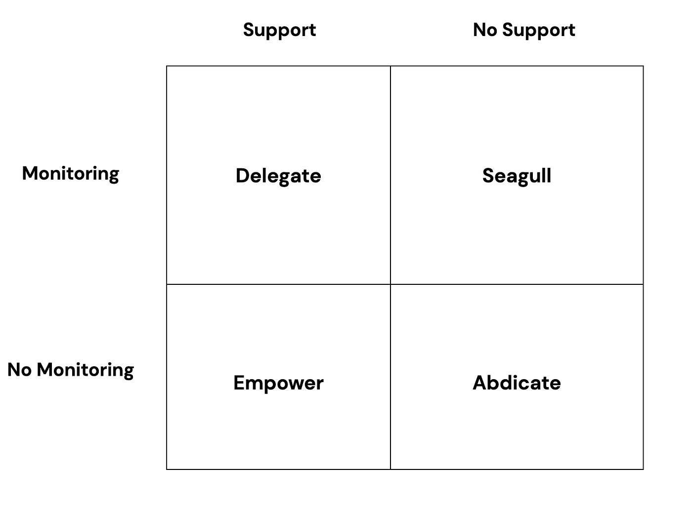
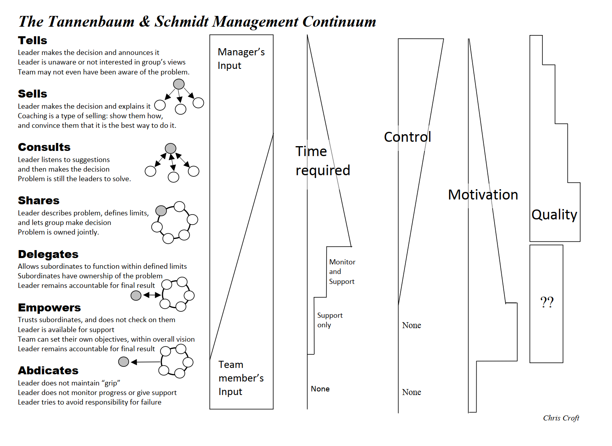
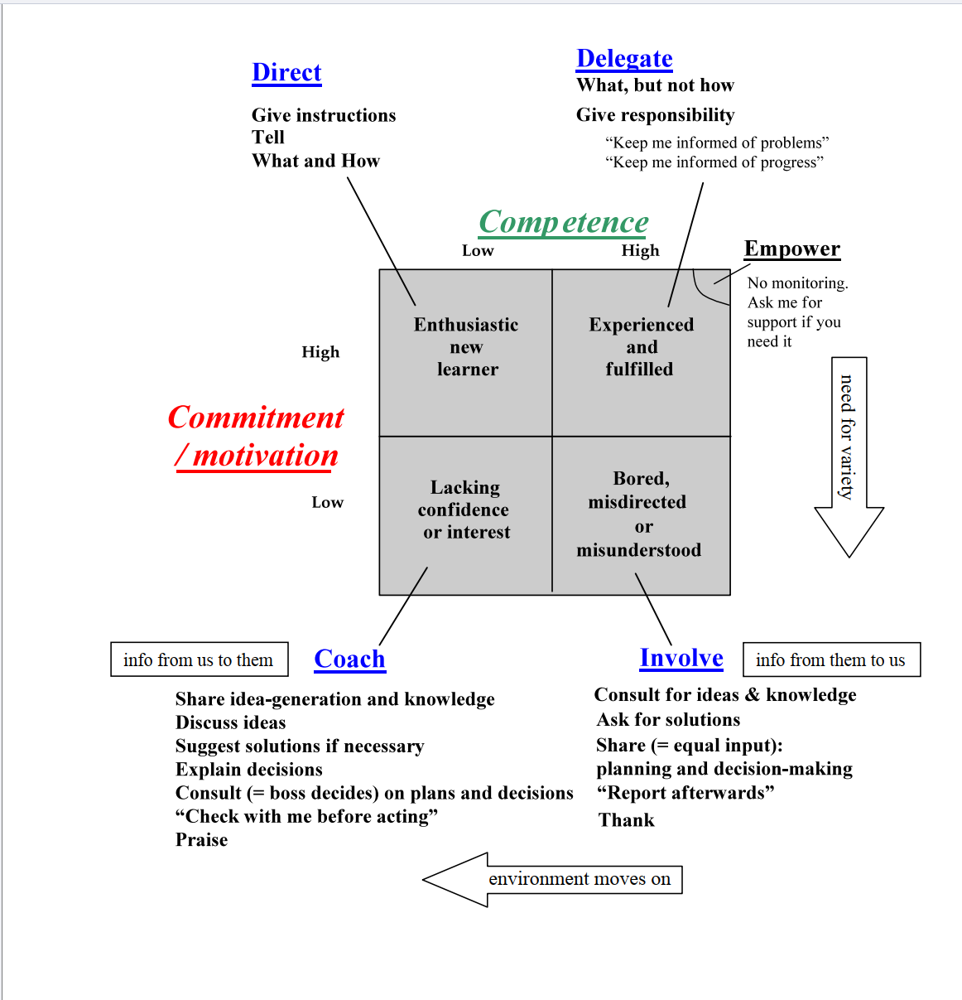
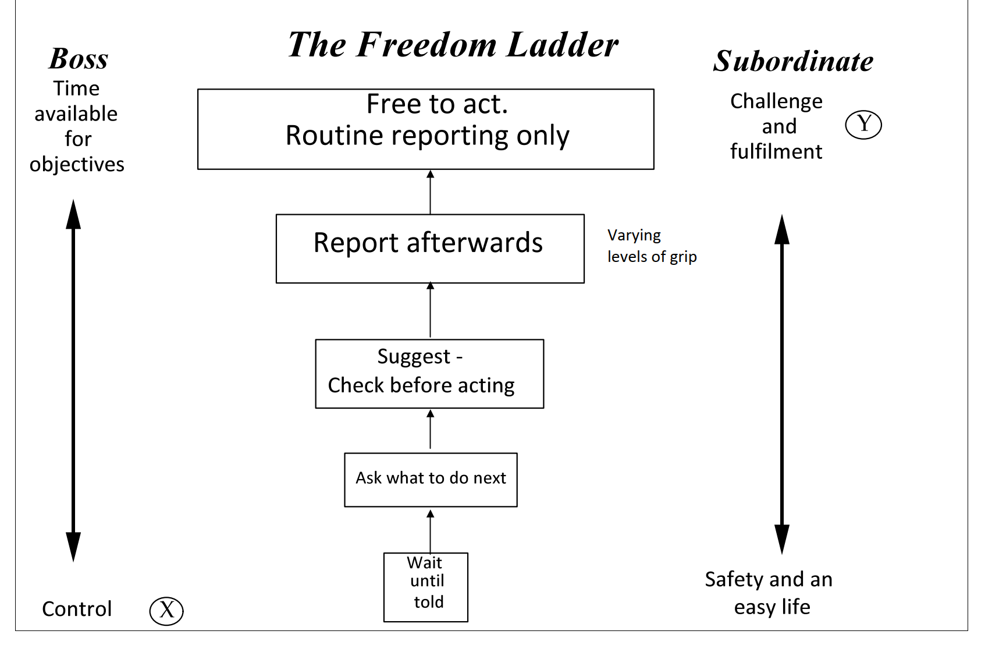
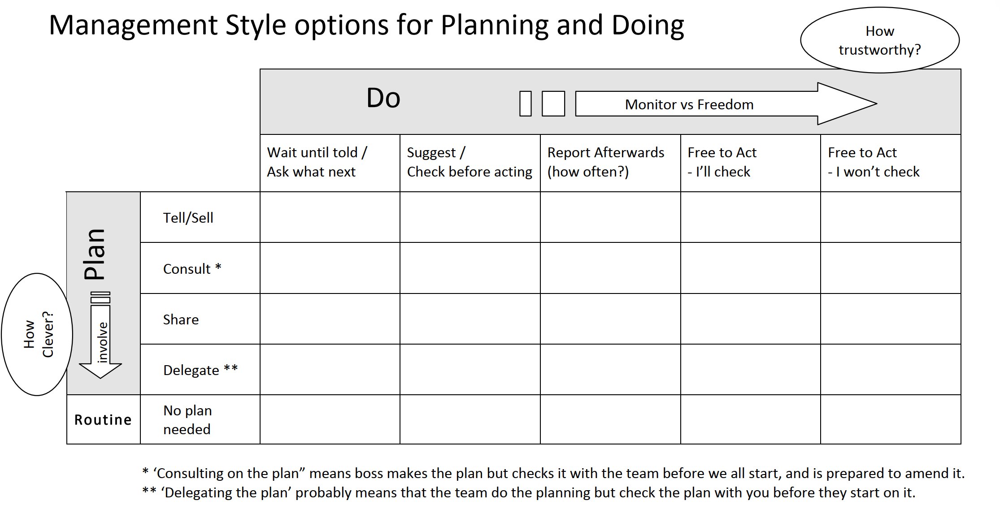

ما هو القائد؟ — دليل عملي سهل التصفّح
يُنظّم هذا الدليل أهم الدروس والقصص والأطر المتعلقة بالقيادة مقابل الإدارة في أقسام واضحة يمكنك تصفّحها بسرعة.
نظرة سريعة
- القادة يُلهمون بالرؤية والحماس؛ والمديرون يبنون الأنظمة ويقيسون النتائج. وأنت بحاجة إلى الاثنين معًا.
- مسؤوليات القائد الثلاث الأساسية: الأفراد، والأنظمة، والرؤية.
- يكاد كل شيء يعود إلى الإدارة: الثقافة والعمليات والإشراف.
- راقب بالحضور الميداني (الإدارة بالتجوّل MBWA) وبـ«العودة إلى أرض العمل».
- التواصل هو القيادة: استخدم خمس طرق متكاملة.
- جون أدير: القيادة تتعلق بالأفعال لا بالصفات (المهمة – الفريق – الفرد).
- التحفيز: هرم ماسلو — أمّن الاحتياجات الأساسية، ابنِ الانتماء، قدّر الإنجازات، وهيّئ الفرص لتحقيق الذات.
- التقدير يرفع الأداء — أشِد بنقاط القوة، ودرّب على الفجوات، وافصل المديح عن التطوير.
- كيّف التحفيز مع الشخصية — أربعة أنماط: التحليلي، والمتحكّم، والمتحمّس، والودود.
- 20 ركيزة للتحفيز: الملكية، والمشاركة، والتحدي، والأمان، والتقدير، والنمو، والتقدّم، والعدالة، والهدف، والقدوة.
جدول المحتويات
- القيادة مقابل الإدارة — قصة القبطان
- هل كل شيء خطأ الإدارة؟ — قصة حادث القطار
- مراقبة الأنظمة — الإدارة بالتجوّل (MBWA) والعودة إلى أرض العمل
- التواصل في القيادة — 5 طرق رئيسية
- جون أدير ونظريات القيادة
- الخلاصات النهائية
- التحفيز — هرم ماسلو للاحتياجات
- التقدير والأداء — «بطاطا الإدارة»
- التحفيز حسب الشخصية — أربعة أنماط
- هل المال محفّز؟ — رؤى رئيسية
- 20 ركيزة للتحفيز (دليل عملي)
- سيناريوهات قيادية تطبيقية (14 حالة شائعة)
- أنماط القيادة — طيف تانينباوم وشميت (موسّع)
- التمكين عمليًا — قصة مالكوم
- لماذا نفوّض؟ — ست مزايا رئيسية
- الاعتراضات على التفويض — العوائق الشائعة ولماذا هي خاطئة
- هل سيُفتقد غيابك؟ — قصة حادث دراجة نيك النارية
- قصة الوسادة — الموت بألف جرح
- كيف تفوّض — العملية ذات الخطوات الثماني
- لا تأخذ «القرد» — إدارة طلبات التفويض
- القيادة الموقفية — الكفاءة مقابل الدافعية
- قصة ديف — حين تسوء القيادة الموقفية
- سلّم الحرية — الاستقلالية التدريجية
- القبضة في التفويض — كم من التحكم تحتفظ به
- التخطيط مقابل التنفيذ — التحكم القيادي ثنائي البُعد
- جدول القيادة — قائمة تحقق يومية وأسبوعية وشهرية وسنوية
- ثلاثة أنواع من نظريات القيادة — السمات، والتبادلية، والتحويلية
- حلقة افعل–احصل–اشعر — كسر الدورات السلبية
- ماسلو × الشخصية — المحفزات حسب النمط
- الملكية — لكل مهمة مالك واحد
- موزة الملل — توسيع القيادة الموقفية
- أخبر ← فوّض — شجرة الميلاد للكفاءة
القيادة مقابل الإدارة — قصة القبطان
القصة
تصعد على متن سفينة سياحية. القبطان يستقبل الركاب بأسمائهم بنفسه، ويضع بطاقات شخصية على الوسائد، ويقدّم الحساء على العشاء، بل ويُلقي الفحم في غرفة المحرّكات عندما يمرض الوقّاد. طاقة تستحق الإعجاب — لكن جسر القيادة فارغ والسفينة تنجرف نحو الجبال الجليدية حتى يهرع القبطان ليعيدها إلى مسارها. بطولي، نعم — لكنه قيادة محفوفة بالمخاطر.
ما تريده فعلًا هو قبطان على الجسر: يفوّض، ويصمّم الأنظمة، ويُبقي الصورة الكبيرة في نظره — لا أن يؤدي كل وظيفة بنفسه.
الدروس الرئيسية
- الإدارة ليست أن تقوم بعمل الجميع؛ بل أن تضمن إنجاز كل شيء.
- ابنِ «آلة من الأفراد» بالتدريب وضبط الجودة وقابلية التتبّع بحيث تُكتشف مشكلات الجودة وتُصلَح.
- مسؤوليات القائد الأساسية:
- الأفراد: الأدوار المناسبة، والتحفيز، والمساءلة.
- الأنظمة: العمليات، وضبط الجودة، وتصحيح الأخطاء، والتحسين المستمر.
- الرؤية: الاتجاه، ومتى يجب تغيير الأفراد أو الأنظمة.
- إذا ساءت الأمور (حساء مالح، سرير سيئ)، فالمسؤولية في النهاية على القائد: الاختيار والتدريب والأنظمة والفحوص.
- المدير الجيد يستطيع أن يغيب لفترة قصيرة وتظل المؤسسة تعمل — بفضل التفويض والأنظمة المتينة.
أسئلة وأجوبة
- لماذا يحفظ الأسماء ويضع بطاقات الوسائد؟ ليُظهر الاهتمام — لكن الاختبار الحقيقي هو هل يضمن نظام (تدريب/جودة) ذلك دون أن يفعل القبطان كل شيء.
- لماذا تُعدّ خدمة الحساء أو العمل في المرجل مشكلة؟ لأنها تسرق الوقت من التخطيط والأنظمة والإشراف.
- هل إنقاذ السفينة يثبت قيادة عظيمة؟ يثبت الشجاعة، نعم — لكن القيادة العظيمة تمنع الحاجة إلى البطولات المتكررة.
- ما «آلة الأفراد»؟ مؤسسة مصمَّمة تحقق فيها الأدوار والتدريب والمساءلة نتائج موثوقة.
- ماذا يحدث إذا اختفى القبطان؟ تحافظ الأنظمة على الاستقرار على المدى القصير؛ وبدون رؤية تظهر المشكلات مع الوقت.
هل كل شيء خطأ الإدارة؟ — قصة حادث القطار
القصة
بعد حادث قطار مميت في بريطانيا، وقع اللوم أولًا على عامل غادر مبكرًا يوم الجمعة. لكن المشرفين سمحوا بثقافة المغادرة المبكرة؛ ومدير المستودع هو من رسم النهج؛ وكان على المدير الوطني أن يكتشف مشكلات الأداء في المستودع. المساءلة تصعد عبر السلسلة.
الدروس الرئيسية
- الأفراد مسؤولون عن اختياراتهم، لكن الأنظمة والثقافة من مهام الإدارة.
- المديرون مسؤولون عن الأفراد والعمليات والمتابعة.
- الرؤساء التنفيذيون مسؤولون عن كل شيء إجمالًا؛ وكل مدير عن مجاله.
أسئلة وأجوبة
- هل العامل وحده المسؤول؟ لا — الثقافة سمحت بذلك؛ ولم يتوقع كارثة.
- وماذا عن المشرف؟ سمح بذلك أو أخفق في ملاحظته — فهو مخطئ جزئيًا.
- لماذا مدير المستودع والمدير الوطني؟ لأنهما يملكان الثقافة والإشراف؛ وعليهما اكتشاف المستودعات المتعثّرة.
- كيف نتجنب ذلك؟ الأفراد المناسبون، والأنظمة المناسبة، والمتابعة المنتظمة.
مراقبة الأنظمة — الإدارة بالتجوّل (MBWA) والعودة إلى أرض العمل
نظرة عامة
لا يستطيع القادة فعل كل شيء. فوّض، وأنشئ الأنظمة، ثم راقبها. وهناك طريقتان عمليتان:
- الإدارة بالتجوّل (MBWA)
- العودة إلى أرض العمل
الإدارة بالتجوّل (MBWA)
- كن حاضرًا بنفسك؛ اقضِ نحو ساعة إلى ساعتين يوميًا في التجوّل والحديث مع الموظفين.
- في الأوقات الصعبة، زِد التواصل ولا تقلّله.
- قاعدة النسبة: 25% كلام، 75% إصغاء.
- اسأل الناس عمّا يفعلونه، وتحقّق من التقدّم، واستمع إلى المشكلات، وشارك المستجدات.
- استخدم MBWA للتأكد من أن تدرّج المعلومات يصل فعلًا إلى الصفوف الأمامية.
العودة إلى أرض العمل
- قم بين حين وآخر بأدنى وظيفة في المؤسسة لتفهم القيود الحقيقية.
- لا تتخفَّ — كن صريحًا بأنك تتعلم.
- الفوائد: المصداقية، والتعاطف، وقرارات أفضل (التوظيف، والمعدات، والتسعير).
- يمنع كبار القادة من الانفصال عن الواقع عندما يرفع المديرون الوسطاء «الأخبار الجيدة» فقط.
أسئلة وأجوبة
- ماذا يجب على القادة فعله بعد التفويض؟ مراقبة الأنظمة والأفراد.
- لماذا MBWA؟ الاتصال المباشر يفحص سلامة العمل والتواصل.
- لماذا العودة إلى أرض العمل؟ تعيد القادة إلى الحقيقة وتكسبهم الاحترام.
التواصل في القيادة — 5 طرق رئيسية
نظرة عامة
التواصل هو الأسلاك التي تربط القيادة. يجمع القادة العظماء بين خمس قنوات لإبقاء فرقهم مطّلعة ومنسجمة ومتحمسة.
الطرق الخمس
- الإدارة بالتجوّل (MBWA) — كن حاضرًا واستمع.
- العودة إلى الميدان — ابقَ قريبًا من الواقع، مرارًا وتكرارًا.
- تدرّج المعلومات — من المديرين إلى المشرفين إلى الصفوف الأمامية؛ صمّم روتينًا رسميًا عند الحاجة.
- اجتماعات الفريق — اجتماعات أسبوعية قصيرة؛ يحضر كل قائد اجتماعين: مع فريقه، ومع رئيسه وزملائه.
- الكلمة السنوية لكل الشركة — شارك النتائج وخطة العام القادم؛ فهي تبني الثقة والانتماء.
أسئلة وأجوبة
- لماذا هذا قوي؟ النطاق، والثقة (إعادة استثمار الأرباح)، والإلهام.
- ما الذي يفشل تحت الضغط؟ التواصل — لا تقلّله؛ بل ضاعفه.
- اقتباس مفيد: «جوهر القيادة أن تكون من يصل الأسلاك ببعضها».
جون أدير ونظريات القيادة
نظرة عامة
نقل جون أدير (ذو الخلفية العسكرية) التفكير من الصفات إلى الأفعال: القيادة هي ما تفعله. وله إطاران رئيسيان:
1) نموذج الدوائر الثلاث (القيادة المرتكزة على الفعل)
التواصل ليس «إضافة» اختيارية — إنه القيادة نفسها. إن فقدته فقدت فريقك.

يوازن القادة بين ثلاثة مجالات متداخلة:
| الدائرة | التركيز | أمثلة |
|---|---|---|
| المهمة | تحقيق الأهداف، والتخطيط، والكفاءة | وضع الأهداف، واتخاذ القرارات، والمتابعة |
| الفريق | تماسك المجموعة، والمعنويات، والتحفيز | بناء الثقة، وتشجيع العمل الجماعي |
| الفرد | الاحتياجات الشخصية والتطوير | تغذية راجعة فردية، وتدريب، وإرشاد |
يبني على نموذج بليك وموتون (المهمة مقابل الأفراد) بتقسيم «الأفراد» إلى الفريق والأفراد.
2) مراحل القيادة الخمس
القيادة تعمل في دورة؛ وفي كل مرحلة فكّر في المهمة والفريق والأفراد.
| المرحلة | ما يفعله القائد |
|---|---|
| 1. تحديد الأهداف | يحدد أهدافًا واضحة؛ ويشارك الرؤية |
| 2. التخطيط | يُشرك الآخرين؛ وينظّم الموارد |
| 3. التوجيه | ينقل الخطط؛ ويُسند المسؤوليات |
| 4. التنفيذ | يشرف على العمل؛ ويراقب الجودة؛ ويحافظ على المعنويات |
| 5. المراجعة | يقيّم النتائج؛ ويستخلص الدروس؛ ويراجع الأهداف |
مثال: تقييم الأداء — المهمة (وضع أهداف قابلة للقياس)؛ الفرد (مراجعة التقدّم).
القيود
- تشكّل في سياق عسكري/مشاريعي؛ وهو الأقوى للعمل المرتبط بأهداف.
- أقل ملاءمة للعمليات المستمرة (المصانع، ومراكز الاتصال).
أسئلة وأجوبة
- من هو جون أدير؟ منظّر قيادة معروف بالقيادة المرتكزة على الفعل.
- أبرز اكتشاف؟ القيادة تتعلق بالأفعال لا بسمات الشخصية.
- ما التركيز في كل مرحلة؟ المهمة والفريق والفرد.
- مثال عملي؟ تقييم الأداء يوائم أهداف المهمة مع تطوير الفرد.
- لماذا هو مهم؟ نقل المجال من الصفات إلى سلوكيات قابلة للتعلّم.
الخلاصات النهائية
- وازن بين القيادة (الرؤية والتحفيز) والإدارة (الأنظمة والقياس).
- تحمّل مسؤولية النتائج: الثقافة والأنظمة من مهام القيادة.
- كن ظاهرًا وتحقّق: MBWA والعودة إلى أرض العمل.
- اربط المؤسسة بالتواصل: استخدم الطرق الخمس جميعها.
- طبّق عدسة أدير: المهمة والفريق والفرد — عبر دورة القيادة.
التحفيز — هرم ماسلو للاحتياجات
نظرة عامة
اقترح ماسلو أن الدافعية الإنسانية تسير وفق هرم من خمسة مستويات يُبنى من القاعدة إلى القمة. بدأ بدراسة السعادة، ثم طُبّق النموذج لاحقًا في العمل. إنه بسيط لكنه قوي: يركّز الناس أولًا على الاحتياجات الدنيا؛ وعندما تُلبّى فقط تصبح الاحتياجات الأعلى محفّزة.
المستويات الخمسة
- الفسيولوجية (البقاء) — الطعام والماء والمأوى والراحة. إن كنت تشعر بالبرد أو الجوع فلن تستطيع التركيز على أي شيء آخر.
- الأمان (الاستقرار) — الثبات وشبكات الأمان وإمكانية التوقّع. في «الغابة» ستسوّر كهفك، وتخزّن الطعام، وتبحث عن نهر ثانٍ. وفي العمل هو الأمان الوظيفي والقواعد العادلة والإدارة المتسقة.
- الانتماء (الاجتماعي) — أن تكون جزءًا من فريق، والصداقات، والاحتواء. الإنسان كائن اجتماعي؛ والحبس الانفرادي يُظهر مدى حاجتنا العميقة إلى الصلة.
- التقدير (المكانة/الأنا) — الاعتراف والاحترام والشعور بأنك مقدَّر وكفء. من الأمثلة «موظف الطباعة للأسبوع» والمسميات الوظيفية وامتلاك مجال. للثقافة دور: بعضها يحتفي بالنجاح الظاهر، وبعضها يفضّل التقدير الهادئ.
- تحقيق الذات — أن تصبح أفضل نسخة من نفسك؛ عمل ذو معنى وإتقان. يستطيع البنّاء أن يشير إلى مبنى ويقول: «أنا من بنى هذا». إنه محفّز داخلي.
ملاحظة حول الاستثناءات: قد يسعى أفراد نادرون (مثل فان غوخ) إلى تحقيق الذات دون الطبقات الدنيا. أما لمعظم الناس فإزالة الأمان تقوّض كل ما فوقه.
إجراءات قيادية
- أمّن الأمان أولًا:
- تواصل كثيرًا (الصورة الكبيرة + ملاحظات شخصية).
- ضع قواعد واضحة؛ وكن عادلًا ومتسقًا كل يوم.
- قدّم الدعم والتدريب عندما يتعثّر الناس؛ ولا تستغل انعدام الأمان سلاحًا.
- ابنِ الانتماء:
- اعقد اجتماعات فريق أسبوعية قصيرة؛ وهيّئ مساحات مشتركة مرحّبة (زوايا القهوة).
- قدّم امتيازات صغيرة (مثل الأساسيات المجانية) وفعاليات اجتماعية بين حين وآخر.
- لبِّ احتياجات التقدير:
- قدّر المساهمات علنًا وسرًّا؛ وامنح الملكية («هذا مجالك»).
- استخدم مسميات أو مسؤوليات ذات معنى؛ واقضِ وقتًا مع الناس — فالاهتمام يدل على القيمة.
- هيّئ تحقيق الذات:
- درّب وطوّر المهارات؛ وقدّم التحديات والاستقلالية.
- دع الناس يشاركون في وضع الأهداف؛ وأئتمنهم على العمل المهم.
أسئلة وأجوبة
- ما المستويات الخمسة؟ الفسيولوجية، والأمان، والانتماء، والتقدير، وتحقيق الذات.
- لماذا الأمان قبل الاجتماعي؟ بدون الأمان يركّز الناس على البقاء ويحمون أنفسهم، مما يضر بالعمل الجماعي.
- ما السياسات التي تضر بالأمان؟ فصل «أدنى 10%» سنويًا؛ والقواعد غير المتسقة؛ والقيادة المتقلبة المزاجية.
- كيف تبني الانتماء؟ بطقوس الفريق، والمساحات المفتوحة، والاجتماعات الشاملة، والفعاليات الاجتماعية الخفيفة.
- ما الذي يلبّي احتياجات التقدير؟ الاعتراف، والمسؤولية، والانتصارات الظاهرة، والوقت مع الرئيس، والملكية الواضحة.
- ما تحقيق الذات في العمل؟ الإتقان والمعنى — عمل صعب يتوافق مع نقاط القوة، مع الاستقلالية والنمو.
- هل من استثناءات؟ حالات نادرة قد تتخطى طبقات، لكن معظم الناس يحتاجون أن تُلبّى الدنيا أولًا.
التقدير والأداء — «بطاطا الإدارة»
نظرة عامة
«الشكر» (التقدير) محفّز قوي يخترق طبقات ماسلو: فهو يعزز الأمان والانتماء والتقدير، بل وتحقيق الذات بتأكيده الأثر. «بطاطا الإدارة» طريقة بسيطة للتفكير في الأداء والتغذية الراجعة.
نموذج البطاطا
أداء كل شخص فيه:
- عمل عادي (✓)
- مجالات تميّز (✓✓)
- نقطة ضعف واحدة أو أكثر (×)
غالبًا ما يركّز المديرون على (×) ويتجاهلون (✓✓). ومع الوقت يتقلص الحافز والإنتاج.
لماذا يأتي التركيز على السلبيات بنتائج عكسية
- يشعر الناس بعدم التقدير فيخفّضون جهدهم في مجالات قوتهم (لا شكر).
- يتجنبون المجال المنتقَد تمامًا تفاديًا لمزيد من الألم.
- تذبل «بطاطا» الأداء الكلي لتصبح «برقوقًا مجففًا» — يؤدي الشخص العمل آليًا.
ماذا نفعل بدلًا من ذلك
- عزّز نقاط القوة (✓✓)
- قدّم شكرًا محددًا وفي وقته. سمِّ الفعل والأثر. ثم توقف — لا تُتبعه بـ«لكن».
- أتح فرصًا أكثر لاستخدام نقاط القوة؛ واجعل الإنجازات ظاهرة (عروض، سجلات تغييرات، إشادات).
- درّب على الفجوة (×) بدعم
- اسأل: «هل تعرف ماذا ستفعل بشكل مختلف في المرة القادمة؟» إن كانت الإجابة نعم فأيّدها؛ وإن لا فدرّب.
- اعرض المساعدة، واعمل معه في المحاولة التالية، وتحمّل المخاطرة: «إن ساءت الأمور فالمسؤولية عليّ».
- اجعل النبرة موجّهة للمستقبل وواثقة: «تستطيع أن تتعلم هذا».
- افصل المديح عن التحسين
- المديح: ✓✓ خالصة (دون «يا للأسف…»). قصير ومحدد وغير مشروط.
- التحسين: محادثة مخصصة — ابدأ بالثقة العامة، ثم ناقش المجال الواحد، وانتهِ بالدعم والإيمان (جيد ← تحسين ← جيد) «شطيرة التغذية الراجعة».
- تجنب «كل شيء في شطيرة واحدة»
- خلط المديح والنقد في حديث واحد يؤدي إلى انطباع سلبي في المتوسط. افصل بينهما.
أسئلة وأجوبة
- أين يقع الشكر في هرم ماسلو؟ الأمان والانتماء والتقدير — ويعزز تحقيق الذات بتأكيد الأثر.
- أليس من الطبيعي التركيز على المشكلات؟ بلى، لكنه يأتي بنتائج عكسية. حقّق التوازن بالتركيز المضاعف على نقاط القوة وتدريب الفجوات.
- ما مدى تحديد المديح؟ شديد التحديد: الفعل + الأثر (من استفاد، وما الذي تغيّر).
- كيف نعالج الأخطاء المتكررة؟ ضع خطة بالمشاركة، ووفّر فرص تدريب، وراجع النتائج؛ ولا تصعّد إلا بعد دعم عادل.
التحفيز حسب الشخصية — أربعة أنماط
نظرة عامة
يشرح ماسلو ما يحتاجه الناس عمومًا؛ أما الشخصيات فتشرح مدى أولويتهم لكل حاجة وكيف يحبون أن يُقادوا. نموذج عملي بسيط يستخدم محورين للوصول إلى أربعة أنماط شائعة. وتكييف أسلوبك يجعل التحفيز يدوم.
المحوران
- الأفقي: هادئ/حذر ← منفتح/ديناميكي (الانطواء ↔ الانبساط)
- الرأسي: منطقي/يقوده العقل ← عاطفي/تقوده العلاقات (التفكير ↔ الشعور)
ينتج عن ذلك أربعة أرباع: التحليلي (أعلى اليسار)، والمتحكّم (أعلى اليمين)، والمتحمّس (أسفل اليمين)، والودود (أسفل اليسار).
مصفوفة مرجعية سريعة
| هادئ / حذر (يسار) | منفتح / ديناميكي (يمين) | |
|---|---|---|
| منطقي / مفكّر (أعلى) | التحليلي | المتحكّم |
| عاطفي / تقوده العلاقات (أسفل) | الودود | المتحمّس |
الأنماط الأربعة
- التحليلي (هادئ + منطقي)
- يقدّر: الأمان، والوضوح، والعدالة، والخبرة، وتحقيق الذات عبر الإتقان.
- تنبيهات: قد يتجنب المخاطرة، ويفضّل التواصل الفردي على المنصات الكبيرة.
- المتحكّم (منفتح + منطقي)
- يقدّر: صلاحية التصرف، والاستقلالية، والتحديات الصعبة، والأثر (تحقيق الذات).
- تنبيهات: قد يتجاوز التفاصيل، وصبره قليل؛ وخطر ترك الآخرين خلفه.
- المتحمّس (منفتح + عاطفي)
- يقدّر: الطاقة الاجتماعية، والتقدير، والرؤية المثيرة، والمكانة الظاهرة.
- تنبيهات: قد يكون غير منظّم، وغافلًا عن الميزانية، ومتقلب المزاج؛ و«لامعًا جديدًا» كل شهر.
- الودود (هادئ + عاطفي)
- يقدّر: الانتماء، والرعاية، والاستقرار، والسبب الواضح وراء التغييرات.
- تنبيهات: قد يتجنب الصراع والمخاطرة؛ ويحتاج وقتًا وطمأنة.
كيف تديرهم وتحفّزهم
- التحليلي
- قدّم سياقًا مكتوبًا وبيانات وقواعد؛ وحدّد مجالات الملكية؛ وضع أهدافًا واضحة وقابلة للقياس.
- أتح له مسائل عميقة ووقتًا للجودة؛ وأثنِ على خبرته تحديدًا؛ وتواصل غالبًا بشكل غير متزامن/فردي.
- المتحكّم
- مكّنه بنطاق وصلاحيات قرار؛ وضع له تحديًا صعبًا وابتعد عن طريقه؛ واتفق على النتائج لا الأساليب.
- تحقّق من التفاصيل والمخاطر الحرجة عند البوابات؛ واطلب حالة موجزة؛ واجعل التغذية الراجعة مباشرة وقصيرة.
- المتحمّس
- ارسم رؤية مثيرة؛ وامنحه وقتًا على المنصة (عروض، إطلاقات) وتقديرًا ظاهرًا؛ وأسند إليه عملًا إبداعيًا.
- أضف ضوابط: مراجعات الميزانية، والمواعيد النهائية، وشريكًا تشغيليًا؛ وراقب هبوط الطاقة وادعم الاستمرارية.
- الودود
- ابنِ الثقة فرديًا؛ واشرح السبب؛ وأنشئ روتينًا آمنًا ويمكن توقعه؛ وركّز على طقوس الفريق.
- اطلب رأيه؛ وضعوا معًا خطط التغيير؛ وطمئنه عند المخاطر؛ وقدّر عونه ودوره في تماسك الفريق.
كيف يقودون
- التحليلي: عادل ومنظّم، ومخطط ومتواصل قوي فرديًا؛ يحتاج إلى العمل على الرؤية والرهانات الأجرأ.
- المتحكّم: ديناميكي ويقود من الأمام؛ يحل المشكلات أثناء الحركة؛ عليه أن يتدرب على التعاطف ومراعاة وتيرة الآخرين.
- المتحمّس: صاحب رؤية ملهمة؛ يُقرن بتحليلي للتفاصيل والاستمرارية؛ ويتجنب التقلب وراء «موضة الشهر».
- الودود: مدير أعلى بارع مع الناس؛ يتفوق في وضع المواهب في أماكنها وتحقيق الانسجام؛ وقد لا يروّج لنفسه للمنصب الأعلى.
أسئلة وأجوبة
- لماذا نكيّف الأسلوب أصلًا؟ الاحتياجات واحدة والتفضيلات مختلفة. ومطابقة الأسلوب تسرّع الثقة والأداء.
- هل يمكن أن يكون الناس مزيجًا؟ نعم؛ فهذا نموذج استدلالي. اعتمد النمط السائد لكن كيّف حسب السياق.
- كيف أتعرف بسرعة؟ لاحظ عدسة القرار (بيانات أم أشخاص) والطاقة (هادئ أم حازم). واسأل كيف يفضلون التغذية الراجعة والتخطيط.
- هل يتغير الناس؟ تحت الضغط قد تتبدل الأنماط؛ فراجع التفضيلات دوريًا.
هل المال محفّز؟ — رؤى رئيسية
نظرة عامة
المال مهم للأمان والمكانة، لكنه بعد حد معين نادرًا ما يخلق تحفيزًا دائمًا. إنه «يدفع» السلوك دون أن يولّد رغبة حقيقية في العمل نفسه. أما الأداء الحقيقي المستدام فيأتي من المعنى والنمو والتحدي والانتماء والفخر والأثر.
التحفيز بالدفع مقابل التحفيز بالجذب
- محفّز الدفع: يستطيع المال أن يجعلك تنجز مهمة (القيادة إلى اسكتلندا مقابل 1,000 جنيه) لكنه لا يجعلك ترغب في المهمة ذاتها.
- محفّز الجذب: الاهتمام، والهدف، والإيمان بالمنتج، والتحدي، والإتقان — هذه تجعلك ترغب في أداء المهمة.
- إذا احتجت إلى دفع مبلغ إضافي ليقوم شخص بالمهمة، فقد يستنتج أن المهمة نفسها ذات قيمة ذاتية ضئيلة.
أين يقع المال في هرم ماسلو
- يدعم الأمان (البقاء + السلامة) وأحيانًا المكانة/التقدير (الرمزية، لا النقد نفسه).
- ليس جزءًا من تحقيق الذات — فذلك يتعلق بالنمو والمساهمة والإبداع والإتقان.
- غالبًا ما يطارد الناس إشارة المكانة التي ينقلها المال، لا العملة الخام.
منطق عوامل الصحة
- تحت مستوى أساسي عادل: الأجر المنخفض يُثبّط فعليًا (توتر، وتشتت، واستياء).
- تخفيض الرواتب يضر بالحافز ضررًا حادًا.
- زيادات الأجر تفيد لفترة قصيرة؛ والشرارة الدائمة هي عادةً التقدير الضمني («إنهم يقدّرونني»). إيداع صامت = أثر ضعيف.
العمل الآلي مقابل العمل الإبداعي
| نوع المهمة | المزيد من المال يميل إلى | السبب |
|---|---|---|
| متكررة / آلية | زيادة الإنتاج | تبادل خطي: افعل أكثر ← اكسب أكثر |
| إبداعية / معرفية / مبيعات | خفض الجودة (عند الحدود القصوى) | ينتقل التركيز إلى الجائزة، فيقل الفضول والدافع الذاتي |
قد يزاحم المال الدوافع الذاتية في العمل الذهني بجعل المكافأة هي الغاية بدلًا من الحرفة.
فخ العدالة والتصعيد
- حظ المنطقة/العملاء يحرّف نتائج المبيعات ← شعور بالظلم.
- المقارنة بين الأكثر تحسنًا والأفضل أداءً تصبح مسيّسة.
- حين يصبح الأجر هو الرافعة الأساسية، يبدو عدم الزيادة كعقاب ← تصعيد لا ينتهي.
أثر التشتيت المعرفي
- ينتقل الانتباه من: العميل، وقيمة المستخدم، والحرفة ← «ماذا سأكسب من هذا؟»
- الحافز يُستبدل ولا يُضاف إليه.
- خطر أخلاقي: اختصارات لتحقيق الأرقام بدلًا من بناء الثقة والجودة.
أسئلة للتأمل (اختبار ذاتي)
- هل ستحسّن الجودة بصمت لو دُفع لك أكثر دون أن يعلم أحد؟ إن كان نعم — فلماذا لم تكن تبذل أفضل ما عندك أصلًا؟
- هل سيجعلك إيداع خفي تعمل بجهد أكبر؟ إن كان نعم — فهل أنت غير منخرط بما يكفي أو غير متوافق؟
- هل تبقى أساسًا من أجل الأجر مع قلة اهتمام بالأثر؟ حان وقت إعادة النظر في دورك أو بيئتك.
إجراءات قيادية (ماذا نفعل بدلًا من ذلك)
- ضع حدًا أدنى عادلًا: تأكد أن التعويض الأساسي يزيل القلق (الأمان أولًا). ولا تراجعه إلا عند تغير السوق أو نطاق الدور.
- افصل التقدير عن النقد: اقرن الزيادات بمديح صريح ومحدد؛ واستخدم تقديرًا غير مالي متكررًا (السرد، والظهور، والملكية).
- صمّم المعنى: اربط المهام بنتائج العملاء؛ وشارك قصص مستخدمين حقيقية؛ ودع الناس يرون جانب «اسكتلندا رائعة» لا الأميال فقط.
- مكّن الإتقان: وفّر أهدافًا تتحدى القدرات، وحلقات تغذية راجعة، وتدريبًا على المهارات، واستقلالية مع مساءلة.
- أظهر التقدّم: استخدم مقاييس تعكس التحسن (سرعة التعلم، ومكاسب الجودة) — لا الإنتاج الخام فقط.
- احذر تحويل الأجر إلى لعبة: تجنب حوافز فردية عالية التذبذب للعمل التعاوني/الإبداعي؛ وامزج إشارات الفريق والجودة.
- اجعل بذل أقصى الجهد أمرًا معتادًا: ارفض ثقافيًا روايات «كنت سأجتهد أكثر لو…»؛ واحتفِ بإتقان الحرفة هويةً.
افعل / لا تفعل بسرعة
| افعل | لا تفعل |
|---|---|
| ادفع بعدالة وشفافية | لا تجعل انعدام الأمان سلاحًا ولا تستخدم الندرة المفاجئة |
| أثنِ بتحديد (الفعل + الأثر) | لا تدفن التقدير داخل زيادة عامة |
| اربط العمل بالهدف ونتائج المستخدم | لا تفترض أن الراتب وحده يحافظ على الانخراط |
| شجّع الأهداف الذاتية (الحرفة، والأثر، والنمو) | لا تبالغ في مسابقات الجوائز النقدية للأدوار الإبداعية |
| اضبط التوقعات: أفضل جهد هو الحد الأدنى | لا تقبل «التراخي» إلى أن يظهر مال إضافي |
الخلاصة
المال يمنع الاستياء ويمكنه تسريع الإنتاج البسيط، لكن التحفيز الحقيقي تغذّيه الغاية والإتقان والتقدير والانتماء والتقدّم والأثر. وإذا كان الجهد الإضافي يعتمد على مال إضافي، فالمحفزات الأساسية مفقودة — فأصلِح تلك لا كشف الراتب فقط.
ملخص في جملة واحدة
استخدم المال لإزالة الاحتكاك — واستخدم المعنى والإتقان والتقدير لإطلاق الأداء.
20 ركيزة للتحفيز (دليل عملي)
نظرة عامة
لقد رأيت النظريات (ماسلو، والبطاطا، والشخصية، والمال). وهذه قائمة التحقق التشغيلية: 20 رافعة ملموسة يستطيع القائد (ويجب عليه) إبقاءها في حركة. اعتبرها «تدقيقًا دوريًا للتحفيز».
القائمة (1–20)
- الملكية – كل شخص يملك شيئًا (لا مهام يتيمة). حتى المسؤوليات الصغيرة تخلق الفخر.
- المشاركة – اطلب الرأي في القرارات مبكرًا؛ شارك في الصياغة ولا تكتفِ بالإعلان.
- التحدي – لكل شخص هدف واحد على الأقل يتحدى قدراته (الصعوبة ≈ 10–20% فوق منطقة الراحة).
- الأهداف الذاتية – دعهم يقترحون الهدف أولًا؛ وتفاوض لرفعه عند الحاجة.
- تقييمات الأداء المنظمة – سنويًا على الأقل (يفضّل كل ستة أشهر) مع مراجعات ربعية خفيفة.
- إشارات الأمان – سياق متكرر، وتوقعات واضحة، وقواعد عادلة، وثبات هادئ.
- المديح والتشجيع – خصوصًا للمتعلمين والقادمين الجدد؛ عزّز الجهد الموجّه في الاتجاه الصحيح.
- إيقاع الشكر – شكر محدد (الفعل + الأثر) تقريبًا أسبوعيًا لكل شخص (دون تكلّف، لكن بانتباه).
- التدريب مقابل النقد – بناء مهارات موجّه للمستقبل؛ افصل التصحيح عن التقدير.
- التفريد – كيّف أسلوبك (تحليلي/متحكّم/متحمّس/ودود) + المحفزات الشخصية.
- التعلّم المستمر – كل شخص يتعلم شيئًا الآن (تتبّع «بند التعلم الحالي»).
- التقدّم الظاهر – اجعل النتائج والتحرك نحو الأهداف ملموسة (لوحات متابعة، وعروض، ومخططات الإنجاز).
- مسار التطوير – وثّق خطة مهارات «الآن ← التالي ← لاحقًا» (أفق 12–18 شهرًا).
- تفعيل الإمكانات – تجاوز الدور الحالي؛ بالتدوير وتفويض نطاق أكبر.
- جرعات التجديد – مهام جديدة/تدوير لمن يتوق إلى التنوع (تجنب الركود).
- الاجتماعي والانتماء – طقوس (اجتماعات وقوف، وعروض، ومراجعات)، ومساحات مشتركة، ولغة شاملة.
- بيئة الفريق – بيئة مادية/افتراضية مريحة: قنوات تواصل، ومساحة قهوة/دردشة، وأمان نفسي.
- العوامل الصحية: المال/الإدارة – دقة الرواتب، وسرعة المصروفات، وموثوقية الأدوات (لا احتكاك يمكن تجنبه).
- العدالة والشفافية – معايير الترقية والتقدير وتوزيع الموارد معلنة.
- القدوة الإيجابية – طاقة القائد تصنع المناخ: يركّز على الحلول، وأخلاقي، وهادئ تحت الضغط.
مصفوفة المحفّزات والإيقاع
| # | البند (مختصر) | المحرّك الأساسي (عدسة ماسلو) | المحرّك الثانوي | الإيقاع / الفحص المقترح | سؤال سريع للقائد |
|---|---|---|---|---|---|
| 1 | الملكية | التقدير / تحقيق الذات | الأمان | تدقيق ربعي | من يملك هذا؟ |
| 2 | المشاركة | الانتماء / التقدير | تحقيق الذات | في كل دورة قرار | من سألت؟ |
| 3 | التحدي | تحقيق الذات | التقدير | دورة عمل / شهريًا | من ينقصه تحدٍّ؟ |
| 4 | الأهداف الذاتية | تحقيق الذات | التقدير | فترات وضع الأهداف | هل بادروا أولًا؟ |
| 5 | تقييمات الأداء | الأمان | التقدير | 6–12 شهرًا + مراجعة ربعية خفيفة | هل التوقعات متزامنة؟ |
| 6 | إشارات الأمان | الأمان | الانتماء | حلقة تواصل أسبوعية | هل خفّفت القلق؟ |
| 7 | المديح | التقدير | الانتماء | مستمر (خاصة في البداية) | من تقدّم اليوم؟ |
| 8 | الشكر | التقدير / الانتماء | تحقيق الذات | ~أسبوعيًا لكل شخص | من لم أشكره؟ |
| 9 | التدريب | تحقيق الذات | التقدير | فترات أسبوعية | من أُنمّي؟ |
| 10 | التفريد | الانتماء | تحقيق الذات | مراجعة أسلوب ربعية | هل أتكيّف؟ |
| 11 | التعلّم | تحقيق الذات | التقدير | مراجعة شهرية | ماذا يتعلم كل شخص؟ |
| 12 | التقدّم الظاهر | التقدير | تحقيق الذات | مراجعات دورات العمل | هل يرون التقدّم؟ |
| 13 | مسار التطوير | تحقيق الذات | الأمان | تحديث كل 6 أشهر | هل المسار موثّق؟ |
| 14 | تفعيل الإمكانات | تحقيق الذات | التقدير | مراجعة مواهب ربعية | من نطاقه أضيق من قدراته؟ |
| 15 | التجديد | الانتماء / تحقيق الذات | التقدير | مسح شهري | من يبدو عليه الملل؟ |
| 16 | الاجتماعي والانتماء | الانتماء | الأمان | طقوس أسبوعية | هل الطقوس صحية؟ |
| 17 | بيئة الفريق | الأمان / الانتماء | التقدير | فحص شهري للبيئة | أي احتكاك يمكن إزالته؟ |
| 18 | العوامل الصحية (مال/إدارة) | الأمان | التقدير | دورات الرواتب/المصروفات | أي احتكاك لم يُحل؟ |
| 19 | العدالة والشفافية | الأمان / التقدير | الانتماء | فحص سياسات ربعي | أي قرارات غامضة؟ |
| 20 | القدوة | الكل (مضاعف المناخ) | — | تأمل ذاتي يومي | ماذا عكست اليوم؟ |
أسئلة وأجوبة
- أليس هذا كثيرًا للمتابعة؟ تعامل معه كلوحة متناوبة — افحص 3–5 بنود أسبوعيًا.
- ماذا لو لم أستطع تنفيذ الـ20 الآن؟ أعطِ الأولوية للأمان (6، 18)، والانتماء (16)، والنمو (3، 11، 13)، والتقدير (7، 8).
- كيف أبدأ؟ اعقد اجتماع «تدقيق تحفيز» مع نفسك: اسرد الفريق، ودوّن الفجوات في كل بند، واختر 3 تدخلات.
- كيف أقيس الأثر؟ راقب الاحتفاظ بالموظفين، والجهد الطوعي، وحجم المبادرات، وسرعة التعلم، ومقاييس الجودة.
- كيف أفوّض؟ عيّن «أبطالًا» (مثل التعلم والانتماء والتقدير) لتعزيز الملكية الموزعة.
دليل التطبيق المصغّر
الأسبوع 1: دقّق الملكية (1)، وأسند ما ينقص؛ وحدّد مواعيد التقييمات (5)؛ وأضف عمود التعلم إلى مستند الاجتماعات الفردية (11). الأسبوع 2: أدخل مقتطف تقدير أسبوعي في اجتماع الوقوف (7/8)؛ وحدد تحديًا لكل مطوّر (3)؛ ووثّق الأدوار (6). الأسبوع 3: صغ مسارات التطوير (13)؛ وأجرِ استطلاعًا لتفضيلات الأسلوب (10)؛ وجدّد الطقوس الاجتماعية (16). الأسبوع 4: مراجعة المواهب (14)؛ ورسالة توضّح سياسة العدالة (19)؛ وفيديو ذاتي للقائد لتجسيد الإيجابية (20).
ثم كرّر شهريًا: دوّر التركيز؛ وأنهِ الاحتكاك الذي حُلّ؛ وارفع التحديات الجديدة.
التحفيز المستدام محفظة: لا رافعة واحدة تحملك — نوّع وأعد التوازن باستمرار.
سيناريوهات قيادية تطبيقية (14 حالة شائعة)
استجابات عملية مرتبطة بأطر الدليل: أدير (المهمة–الفريق–الفرد والمراحل الخمس)، وقصة القبطان (الأنظمة قبل البطولات)، ومساءلة الإدارة، وMBWA والتواصل، وماسلو، والتقدير (البطاطا)، وأنماط الشخصية، ومبادئ التحفيز والمال.
1. تشك في أنهم سيفعلون ما وعدوا به
التشخيص: إشارة موثوقية منخفضة؛ مهمة/ملكية غير واضحة؛ نظام متابعة مفقود.
الهدف: ضمان الالتزام + رؤية مبكرة.
الإجراءات: وضّح المُخرَج والموعد؛ اجعلهم يرسمون الخطوات والمخاطر الأولى؛ سجّل في متتبع إجراءات مشترك؛ وأجرِ فحص MBWA في منتصف المدة.
العبارة: «أخبرني كيف ستتناول هذا لأدعمك لا لألاحقك».
الأطر: أدير (وضوح المهمة)، والتواصل (المتابعة)، والأنظمة أفضل من الأمل.
2. زميل يقول «ليست مهمتي» (وُعد العميل بشيء)
التشخيص: غموض في الحدود؛ خطر على ثقة العميل.
الهدف: حماية الوعد؛ وإحكام تعريف العملية.
الإجراءات: أعد الصياغة حول أثر العميل؛ حدّدوا معًا معايير النطاق؛ أمّن مساعدة مؤقتة؛ حدّث مصفوفة المسؤوليات / إجراءات التشغيل.
العبارة: «العميل أولًا — لننهِ هذا، ثم نثبّت ملكية أوضح».
الأطر: القبطان (ثغرة في النظام)، وماسلو (ثقة العميل = أمان)، والتواصل.
3. أنت مثقل من كل الاتجاهات
التشخيص: لا نظام للأولويات؛ خطر البطولات الارتجالية.
الهدف: عبء عمل ظاهر ← مفاضلات مقصودة.
الإجراءات: احصر المهام؛ صنّفها (ضرورية/استراتيجية/روتينية/قابلة للتفويض)؛ تفاوض مع رئيسك على خفض أولوية بعضها؛ فوّض بوضوح؛ ضع حدًّا للأعمال الجارية وفرزًا أسبوعيًا.
العبارة: «لننجز X في موعده علينا تأجيل Y — هل نتفق على هذه المفاضلة؟»
الأطر: تصميم الأنظمة، وأدير (التخطيط)، ومبادئ التفويض.
4. موظف كفء لكنه يبذل الحد الأدنى
التشخيص: وصل إلى هضبة؛ فجوة في التقدير/الملكية.
الهدف: إعادة إشعال الدافع الذاتي بنقاط القوة + تحدٍّ جديد.
الإجراءات: مديح محدد على الموثوقية؛ ناقش المحفزات (عدسة الشخصية)؛ أسند مجالًا يملكه؛ ضع مقياسًا يتحدى قدراته؛ إنجازات سريعة + تقدير.
العبارة: «ثباتك في (أ) متين — هل أنت مستعد لترقية (ب) ليكون مجالك؟»
الأطر: البطاطا (عزّز ✓✓)، وماسلو (التقدير، وتحقيق الذات).
5. انتهى مشروع للتو
التشخيص: خطر تخطي مرحلة المراجعة.
الهدف: استخلاص التعلم + تعزيز النجاح.
الإجراءات: مراجعة رسمية؛ وثّق الأصول القابلة لإعادة الاستخدام؛ تقدير علني؛ إغلاق مع أصحاب المصلحة؛ أرشفة خط الأساس للمقاييس.
العبارة: «لنثبّت ما يجب تكراره قبل أن نتفرق».
الأطر: أدير (المراجعة)، والتقدير، وتدرّج التواصل.
6. موظف متوسط الأداء (ثابت، بلا أخطاء)
التشخيص: نقاط قوة كامنة غير مستغلة ← خطر الركود.
الهدف: دفعه إلى مسار النمو.
الإجراءات: حدّد نقاط القوة الكامنة؛ مديح موجّه؛ عرّف هدفًا يميّزه؛ مهمة صغيرة تتحدى قدراته/إرشاد؛ راجع بعد 4–6 أسابيع.
العبارة: «أين تريد أن تكون أقوى بوضوح في الربع القادم؟»
الأطر: البطاطا (وسّع ✓✓)، وماسلو (التقدير/تحقيق الذات).
7. «الظربان» – كفء، دفاعي عند الاستفسار
التشخيص: اعتماد على نقطة واحدة؛ تهديد مُدرَك للاستقلالية.
الهدف: الشفافية والمرونة دون تنفير.
الإجراءات: اعترف بكفاءته الحالية؛ ارسموا العملية معًا؛ حدّد حدود القرار؛ درّب بديلًا؛ أدخل مقاييس خفيفة؛ احترم مناطق استقلاليته.
العبارة: «ساعدني في جعل هذا متينًا ليبقى يعمل بسلاسة إن غبت».
الأطر: الأنظمة مقابل البطولات، وأدير (استمرارية الفريق)، والأمان (ماسلو).
8. اتُّهمت بأنك استبدادي
التشخيص: فجوة في الإشراك؛ عجز في الثقة.
الهدف: إعادة بناء التخطيط التعاوني.
الإجراءات: اطلب أمثلة محددة؛ اشرح النية (موثوقية النظام)؛ أشركهم مبكرًا في الخطة القادمة؛ جرّب قيادتهم لمبادرة محدودة؛ قدّرهم علنًا.
العبارة: «ساعدني في تصميم هذا معًا لأتمكن من التراجع بثقة».
الأطر: أدير (التخطيط/التوجيه)، والتواصل، والتقدير.
9. مشكلة عميل خارج مجالك
التشخيص: خطر فراغ الملكية؛ قلق العميل.
الهدف: توفير جهة اتصال مسؤولة واحدة + حل في الوقت المناسب.
الإجراءات: تبنَّ المشكلة؛ اجمع الحقائق؛ حدّد موعد معاودة الاتصال؛ صعّد داخليًا؛ أكّد الحل والرضا.
العبارة: «سأتولى هذا — التحديث التالي بحلول 14:30».
الأطر: الأمان (ماسلو)، وموثوقية التواصل، ومساءلة القيادة.
10. موظف جديد متحمس يرتكب أخطاء
التشخيص: طاقة عالية، وعملية غير مضبوطة.
الهدف: الحفاظ على الحماس مع تشكيل الجودة.
الإجراءات: امدح تفاصيل الجهد؛ ضيّق النطاق؛ أعطه قائمة تحقق؛ المراقبة ثم المراقبة العكسية؛ تغذية راجعة مصغّرة يوميًا؛ إنجاز مبكر ظاهر.
العبارة: «حماسك رائع — وقائمة التحقق هذه تجعل الجودة تضاهيه».
الأطر: البطاطا (عزّز)، وأدير (التوجيه/التنفيذ)، والتعلم = التقدير/تحقيق الذات.
11. مشروع مهم تأخر قليلًا
التشخيص: تأخر مبكر؛ خطر التسابق في اللحظة الأخيرة.
الهدف: تعافٍ محكوم بشفافية.
الإجراءات: قدّر الانحراف كميًا؛ اطلب من القائد خيارات التعافي (النطاق/الموارد/الوقت)؛ اختر خيارًا؛ زد وتيرة المتابعة؛ بادر بتحديث لأصحاب المصلحة.
العبارة: «أعطني مسارين للتعافي مع مخاطرهما بعد ظهر اليوم».
الأطر: أدير (التخطيط/التنفيذ/المراجعة)، والأنظمة مقابل البطولات.
12. نقد متبادل من وراء الكواليس
التشخيص: تآكل الأمان النفسي؛ خطر على الانتماء.
الهدف: استعادة أعراف التغذية الراجعة المباشرة.
الإجراءات: استمع لكل طرف على حدة؛ أعد تأكيد القاعدة: المباشرة أولًا؛ توسّط في جلسة مشتركة (أهداف مشتركة)؛ أسند هدفًا صغيرًا مشتركًا؛ راقب النبرة عبر MBWA.
العبارة: «نحل المشكلات وجهًا لوجه — لننسجم معًا الآن».
الأطر: ماسلو (الانتماء/الأمان)، وطرق التواصل، ودائرة الفريق.
13. يتهرب من المسؤولية؛ ويسأل باستمرار
التشخيص: انعدام أمان أو خوف من اللوم؛ اعتماد متعلَّم.
الهدف: بناء القدرة على اتخاذ القرار باستقلالية.
الإجراءات: اسأل عن المخاطر التي يراها؛ فوّض في حدود (قيود)؛ اطلب التوصية أولًا؛ امدح القرارات الصحيحة؛ وسّع النطاق تدريجيًا.
العبارة: «أحضر لي القرار الذي كنت ستتخذه ولماذا — وسأدرّبك على الفجوات».
الأطر: ماسلو (الأمان)، وأدير (تطوير الفرد)، وسلّم التفويض.
14. فشلت مهمة فوّضتها؛ وتلقيت توبيخًا
التشخيص: ثغرة في المراقبة/بوابة الجودة؛ مساءلة القائد.
الهدف: استعادة الثقة الخارجية؛ وتقوية النظام؛ والحفاظ على ثقة المفوَّض.
الإجراءات: تحمّل الفشل أمام الأعلى («فاتني الفحص المرحلي»)؛ تحليل سريع للسبب الجذري (وضوح المواصفات؟ تغيّر السياق؟ غياب ضبط الجودة؟)؛ طبّق مراجعة منتصف المدة وتعريف «اكتمال العمل»؛ خطة استعادة العميل (اعتذار + تصحيح + وقاية)؛ شارك التعلم في مراجعة الفريق؛ تجنب النبرة العقابية مع مفوَّض كان له نجاح سابق.
العبارة (للأعلى): «أضيف بوابة جودة مرحلية؛ وإجراء التعافي يكتمل بحلول 10:00 غدًا».
الأطر: سلسلة خطأ الإدارة، وأدير (المراجعة)، والأنظمة قبل البطولات.
أنماط القيادة — طيف تانينباوم وشميت (موسّع)
نظرة عامة
أسلوب القيادة هو إلى حد كبير مسألة مقدار التحكم في القرار الذي تحتفظ به مقابل ما تمرّره للآخرين. وصف تانينباوم وشميت طيفًا يمتد من قيادة موجّهة بالكامل من القائد إلى موجّهة بالكامل من الفريق. ونحن نوسّعه بحالتين نهائيتين إضافيتين (التمكين مقابل التخلّي) ونبرز الآثار على التحكم والتحفيز والوقت والجودة.
تعريف الأنماط (مقياس منزلق للتحكم)
| النمط | السلوك الأساسي | من يقرر؟ | المتابعة | الأثر التحفيزي | السرعة |
|---|---|---|---|---|---|
| أمر | إصدار التعليمات (ماذا وكيف) | القائد 100% | ضئيلة (فحص الامتثال) | منخفض (طاعة) | سريع |
| أقنع | أمر + تبرير السبب | القائد 100% | خفيفة | أعلى قليلًا (أُضيف المعنى) | سريع |
| استشر | عرض خطة مبدئية؛ ودعوة للمدخلات | القرار النهائي للقائد | معتدلة (دمج الملاحظات) | متوسط | أبطأ |
| شارك | المجموعة تناقش؛ والقائد صوت من عدة أصوات | مشترك (تصويت/إجماع) | مشتركة | أعلى (الإشراك) | بطيء |
| فوّض | القائد يحدد الهدف؛ والفريق يقرر الأسلوب | الفريق (ضمن النطاق) | نشطة (فحوص المراحل) | عالٍ | سريع بعد الإعداد |
| مكّن | القائد يمنح استقلالية واسعة + ثقة | الفريق | تفاعلية (دعم عند الطلب) | عالٍ جدًا (إشارة ثقة) | سريع جدًا (من حيث وقت القائد) |
| تخلَّ | القائد ينسحب؛ لا متابعة ولا دعم | الفريق فعليًا (بلا توجيه) | لا شيء | ينخفض (يُشعَر بلامبالاة القائد) | سريع (على المدى القصير) |
الآثار المقارنة (مبسّطة)
| البُعد | أمر | أقنع | استشر | شارك | فوّض | مكّن | تخلَّ |
|---|---|---|---|---|---|---|---|
| التحكم | عالٍ | عالٍ | عالٍ | متوسط | أقل | منخفض جدًا | صفر ظاهريًا (لكن مع خطر) |
| التحفيز | منخفض | منخفض+ | متوسط | عالٍ | عالٍ | عالٍ جدًا | يهبط |
| وقت القائد الآن | قليل | قليل+ | متوسط | كثير | متوسط↓ | قليل جدًا | قليل جدًا |
| الجودة (المتوسط) | متفاوتة | أعلى قليلًا ↑ | ↑ | ↑↑ | تعتمد (قد ترتفع ↑) | تعتمد (ملاءمة الثقة) | غالبًا ↓ |
| الخطر (عند سوء الاستخدام) | منخفض (الخنق) | منخفض | معتدل (تجاهل المدخلات) | تباطؤ القرار | اتساع النطاق | انحراف خفي | إلقاء اللوم عند الفشل |
متى تستخدم أيًّا منها
- أمر: الطوارئ؛ والمهام الحساسة للامتثال حيث الانحراف خطر؛ والمبتدئ في سياق عالي المخاطر.
- أقنع: الحاجة إلى انسجام سريع مع دفعة معنوية خفيفة؛ وعند تقديم قرار غير محبوب لكنه ضروري.
- استشر: لديك خبرة في مسودة لكن تريد كشف المخاطر؛ والوقت معتدل؛ وبناء القبول.
- شارك: المشكلات الاستراتيجية/الغامضة؛ والحاجة إلى تنوع وجهات النظر؛ ولحظات بناء الثقافة.
- فوّض: نتيجة واضحة، وأفراد أكفاء، وأهداف التطوير وكسب الوقت؛ وما زلت بحاجة إلى رؤية.
- مكّن: فريق ناضج عالي الثقة؛ وخبرة المجال تفوق خبرتك؛ وسرعة الابتكار مهمة؛ وخطر الإفراط في المتابعة أكبر من التقصير.
- تخلَّ (تجنّب): يوحي بأنك لا تهتم؛ ويرفع احتمالات الفشل؛ ويقوّض الأمان والمساءلة.
قائمة اختيار سريعة
- ما نتيجة القرار الخاطئ؟ (عالية ← انتقل يسارًا؛ منخفضة ← يمكن الانتقال يمينًا.)
- هل لديهم قدرة مثبتة هنا؟ (نعم ← انتقل يمينًا.)
- هل سرعة هذا القرار أهم من التطوير بعيد المدى؟ (نعم ← ميل إلى اليسار.)
- هل القبول ضروري لجودة التنفيذ؟ (نعم ← استشر/شارك/فوّض.)
- هل هذه فرصة نمو لهم؟ (نعم ← فوّض أو مكّن مع شبكات أمان.)
- هل أنت معرّض لخطر البطولات (قصة القبطان)؟ (نعم ← انتقل يمينًا.)
- هل تستطيع تطبيق متابعة دنيا دون اختناق؟ (إن لا، فإما تمكّن الأكفاء أو تعيد تحديد النطاق.)
المزالق والأنماط الخاطئة
- أمر/إقناع دائم مع موظفين مهرة ← انسحاب (التقدير وتحقيق الذات مسدودان).
- استشارة زائفة (القرار متخذ مسبقًا) ← تهكّم؛ وصمت مستقبلًا.
- مشاركة لا تنتهي ← شلل القرار؛ وتأخر الجدول.
- تفويض بلا نقاط تفتيش ← ينجرف نحو فشل خفي (يُخلَط مع التمكين).
- تمكين بلا توقع صريح بـ«اطلب المساعدة» ← تخلٍّ عَرَضي.
- تخلٍّ + لوم لاحق ← يدمّر الأمان النفسي والثقة.
تدفق القرار (نموذج ذهني)
- حدّد أهمية المهمة ومخاطرها.
- قيّم القدرة ومستوى الثقة (الأداء السابق + معرفة المجال).
- اختر الحد الأدنى من الأنماط الذي يوفر أمانًا كافيًا + أقصى تطوير.
- أرسِ الوضوح: النتيجة، والقيود، وحدود القرار، وإيقاع المتابعة (إلا عند التمكين).
- أعلن النمط صراحة: «أنا أفوّض (مع متابعة في المنتصف)» مقابل «أنا أمكّن (تعال إليّ إن تعثرت)».
- نفّذ + تابع (أو كن مستعدًا).
- راجع وعدّل النمط مستقبلًا بحسب النتيجة.
الربط بالأطر الأخرى
- أدير: يؤثر النمط في كيفية موازنتك بين التحكم في المهمة وإشراك الفريق ونمو الفرد.
- ماسلو: التحرك يمينًا يزيد التقدير/تحقيق الذات (الاستقلالية، والإتقان)؛ تأكد من الأمان أولًا.
- بطاطا الإدارة: التقدير الإيجابي يسرّع الحركة يمينًا بأمان.
- قسم المال كمحفّز: الاستقلالية والثقة تتفوقان على الدفع الخارجي في العمل الإبداعي.
- السيناريوهات التطبيقية: السيناريو 13 (الاعتماد) ← تحرك تدريجيًا يمينًا؛ السيناريو 14 (الفشل) ← شدّد ثم وسّع من جديد.
مصفوفة الأرباع الأربعة (موضَّحة)
لتوضيح الفروق الحاسمة بين التفويض والتمكين والتخلّي ونمط رابع إشكالي («النورس»)، تأمل هذه المصفوفة 2×2:
| الدعم متاح | لا دعم | |
|---|---|---|
| متابعة | التفويض ✓ تراقب التقدم + تساعد عند الحاجة | النورس ✗ تنتقد دون مساعدة |
| بلا متابعة | التمكين ✓ ثقة + متاح عند الطلب | التخلّي ✗ تختفي + لا تهتم |
الفروق الأساسية:
- التفويض: تتابع التقدم (فحوص يومية/أسبوعية/مرحلية) وتقدم الدعم عندما يحتاجون المساعدة. وهو أكثر أنماط الاستقلالية العالية أمانًا.
- التمكين: لا تتابع لأنك تثق بهم تمامًا، لكنك تبقى متاحًا للدعم إن طلبوه. وعليهم المبادرة بالتواصل.
- التخلّي: لا متابعة ولا دعم — أنت غائب ولا تهتم. هدّام دائمًا.
- إدارة النورس: تتابع (تلاحظ المشكلات) لكن لا تقدم دعمًا — فقط تطير وتنتقد («هذا ليس جيدًا، شمّروا عن سواعدكم») ثم تغادر. وهي هدّامة أيضًا.
الاختيار يكون بين التفويض والتمكين. لا تستخدم أبدًا نمطي التخلّي أو النورس.

خلاصة في جملة
اختر نمط التحكم الأخف الذي لا يزال يحمي الجودة والسلامة — ثم اكسب حق التحرك أكثر نحو اليمين ببناء القدرات والأنظمة الواضحة.
التمكين عمليًا — قصة مالكوم
ماذا يفعل مالكوم
يدير مالكوم سميث شركة من 200 شخص. يثق بالناس تمامًا ولا يراقبهم. لكنه متاح دائمًا للمساعدة. وهكذا يفعل ذلك.
مكتب مالكوم الفارغ
ما يراه الناس:
- مكتب فارغ
- لا أوراق ولا خزائن ملفات
- طاولة فقط
ما يقوله مالكوم:
- «أنا متفرغ طوال اليوم، يمكنني رؤيتك في أي وقت»
- «هنا أفكّر»
- «أفوّض كل شيء. لدي فريق ممتاز حقًا»
لا مزيد من التقارير الأسبوعية
الطريقة القديمة:
- كان مدير المصنع يكتب تقريرًا أسبوعيًا
- يستغرق كتابته ساعة
- ويستغرق مالكوم 30 دقيقة لقراءته
- الأرقام: الأطنان المنتجة، والهدر، والربح، والعمل الإضافي
ما قاله مالكوم:
- «لماذا تحضر لي هذا؟»
- «أنا أثق بك — لا تكتب التقرير بعد الآن»
- «إن كانت هناك مشكلة تستطيع حلها فحلّها فحسب»
- «وإن لم تستطع، تعال إليّ وسأساعدك»
النتيجة: لم يكتب المدير التقرير مرة أخرى.
ثورة سياسة السيارات
القواعد القديمة:
- قائمة صارمة بالسيارات المسموحة
- يجب أن تكون رباعية المقاعد
- فتحة السقف فقط إن حققت الأهداف
ما فعله مالكوم:
- مزّق القائمة أمام الجميع
- «اختر ما تحب، ما دام معقولًا»
- «الأمر عائد إليك»
ما حدث:
- اختار معظمهم سيارات موندو ديزل عملية
- واحد حصل على سيارة بي إم دبليو أحلامه
- صاحب البي إم دبليو تطوع لكل الرحلات الطويلة
- كان الجميع سعداء
نماذج المصروفات ببساطة
مشكلة مالكوم:
- كان يقضي 30 دقيقة أسبوعيًا في توقيع المصروفات
- وكان يوافق عليها دائمًا على أي حال
حله:
- صوّر توقيعه على نماذج فارغة
- «لم أعد أتحقق — أنا أثق بكم»
- «املؤوه، وأرسلوه إلى المحاسبة، واستلموا أموالكم»
موقفه:
- «ربما يضيف أحدهم 10 جنيهات لزهور لزوجته»
- «ومن يهتم؟ ربما تستحق الزهور»
- «تستحق 10 جنيهات إن حفّزت الجميع»
مرونة الوقت والإجازات
الوقت:
- لا تسجيل حضور
- «اعملوا الساعات التي تحتاجونها لإنجاز المهمة»
الإجازات:
- لا عدّ للأيام
- «افعلوا ما هو معقول»
- «إجازة أطول هذا العام، وأقصر العام القادم — الأمر لكم»
درس مال الإجازة
القصة:
- اصطحب صديق أطفاله إلى فرنسا
- كان الأطفال يسألون باستمرار: «هل نأخذ بوظة؟ شوكولاتة؟»
التجربة:
- اليوم الأول: «هذه 200 جنيه لنا جميعًا»
- «يمكنكم إنفاقها كلها اليوم إن أردتم»
- «لكن حين تنتهي، فقد انتهت»
ما فعله الأطفال:
- وضعوا ميزانية فورًا
- قسّموا المال بين البوظة والشوكولاتة ونبيذ الأب
- حسبوا حدود الإنفاق اليومية
- أصبحوا «محاسبين صغارًا»
- حتى قالوا للأب: «لا مزيد من النبيذ — شربت كأسين أمس»
النتيجة: عادوا ومعهم مال متبقٍّ.
لماذا ينجح
الثقة تخلق الملكية:
- مندوبو المبيعات لم يشتروا سيارات فيراري
- فكّروا: «هذا مال شركتنا»
- اعتنى الأطفال بمال الإجازة لأنه مالهم
الثقة تجعل الناس جديرين بها:
- حين تثق بشخص تمامًا
- غالبًا ما يصبح أكثر جدارة بالثقة
- لا أقل
كيف تعرف بمن تثق
طريقة مالكوم: «أستطيع أن أعرف بحدسي»
الطريقة الأكثر أمانًا:
- ابدأ بالتفويض (راقبهم)
- راقب أداءهم لشهور أو سنوات
- إن كانوا بارعين، فقل لهم:
- «كنت تؤدي هذه المهمة ببراعة»
- «أثق بك تمامًا — لا مزيد من المتابعة»
الصورة الكبرى
ما يعلّمنا إياه التمكين:
- إن كان الناس يتحملون انعدام المتابعة تمامًا
- فمتابعتهم (التفويض) آمنة جدًا
- الثقة تقود إلى الملكية
- والملكية تجعل الناس يهتمون أكثر
لماذا نفوّض؟ — ست مزايا رئيسية
نظرة عامة
لماذا تريد تفويض العمل لآخرين أو ربما تمكينهم؟ إليك ست مزايا واضحة تجعل التفويض جديرًا بالقيام به.
المزايا الست
1. التحفيز
- يحب الناس أن تُسند إليهم مهام
- قد يكون رد فعلهم الأول: «آه، أُسندت إليّ هذه المهمة»
- لكنهم يجدون الرضا في الإنجاز وتجاوز التحديات
- هذا هو السبب الأول للتفويض
2. جودة عمل أفضل
- قد تحصل على عمل أجود مما لو قمت به بنفسك
- أحيانًا سيؤديه الناس أفضل منك
- قد تفكر: «ما كنت لأفعله بهذه الطريقة»
- لكن طريقتهم قد تكون جيدة مثل طريقتك، إن لم تكن أفضل
- ما تجده تافهًا ومملًا قد يحبونه
- وقد يؤدون العمل أفضل منك
3. فرص التعلم
- يستطيعون التعلم من العمل
- يحتاج الجميع إلى التعلم في وظائفهم من أجل التحفيز
- التفويض وسيلة لجعل الناس يتعلمون
4. وقتك
- من الواضح أن إسناد العمل إلى الآخرين أسرع
- يستغرق شرحه وقتًا في البداية
- لكنه يستحق لأنك توفر الوقت في النهاية
5. توزيع المخاطر
- إن حدث لك شيء، يستطيع آخرون التعامل معه
- إن غاب الشخص الوحيد الذي يعرف كيف يؤديه
- التفويض إلى شخص ثالث يعني نسخة احتياطية
- إن غادر أحدهم أو مرض أو انشغل — لديك آخرون قادرون على أدائه
6. يحرّرك للترقية
- كلما فوّضت أكثر كان ذلك أفضل
- يقلق بعض الناس من أن يظن رئيسهم أنهم لا يفعلون شيئًا
- هذا خوف سخيف
- الطريقة الوحيدة لترقيتك هي أن يستطيع آخرون أداء وظيفتك الحالية
- لا تريد أن تكون لا غنى عنك وإلا لن تُرقّى أبدًا
- فكّر في تفويض أكبر قدر ممكن
رؤى رئيسية
مفارقة الترقية:
- أن تكون لا غنى عنك = أن تبقى عالقًا
- تعليم الآخرين وظيفتك = فتح طريقك إلى الأعلى
مفاجأة الجودة:
- ما تجده مملًا قد يجده الآخرون مثيرًا
- الأشخاص المختلفون يجلبون نقاط قوة مختلفة
- «ليست طريقتي» لا تعني «طريقة خاطئة»
استثمار الوقت:
- الشرح يستغرق وقتًا في البداية
- لكنه يوفر وقتًا أكبر بكثير على المدى البعيد
- فكّر في الأسابيع والأشهر القادمة، لا اليوم فقط
الاعتراضات على التفويض — العوائق الشائعة ولماذا هي خاطئة
نظرة عامة
تسمع شتى الاعتراضات على التفويض — عوائق وأعذارًا لعدم تفويض الناس. لكن كل اعتراض على التفويض خاطئ في الحقيقة. وإليك السبب.
الاعتراضات الشائعة
«قد يسوء الأمر» (الخوف من الفشل)
- السبب الحقيقي لعدم التفويض هو الخوف من أن يسوء الأمر
- وهذا لا أساس له — فإن كنت تتابع ومستعدًا للتدخل والدعم، فلا يمكن أن يسوء
«قد يصبحون أفضل مني»
- الخوف من أن يصبح العاملون لديك أفضل منك
- هذا سخيف — فنحن نريدهم أن يكونوا أفضل منا
- لا تخشَ «قد يؤدونه أفضل مني وأبدو سيئًا»
- إن كان لديك أناس يؤدون عملًا رائعًا من أجلك، فستبدو جيدًا بصفتك قائدهم
«أنا مشغول جدًا عن الشرح»
- قد يكون هذا صحيحًا إن كنت في عجلة شديدة
- لكن إن وجدت وقتًا للشرح فإنه يؤتي ثماره أضعافًا مضاعفة
- سيؤدونه لك في المرة القادمة والتي تليها
- «ليس لدي وقت لتعليمهم» عذر سخيف
- إن كنت مشغولًا لدرجة ألا وقت لديك للشرح، فهذا يدل على أنه كان عليك تفويض أشياء أخرى
«إنه ممتع» أو «أنا الأفضل فيه»
- من الممتع فعلًا أن تعود إلى ما كنت تفعله سابقًا
- وربما صحيح أنك الأفضل فيه — ولهذا جُعلت رئيسًا
- لكن عليك أن تتخلى عن ذلك
- فوّض إلى أشخاص قد لا يكونون بارعين مثلك، لكنهم سيتعلمون مع الوقت
- كيف يمكن أن يصبحوا بجودتك إن لم تعطهم إياه؟
- الإدارة ليست بالضرورة عن المتعة
- عليك أن تعلّمهم ليكونوا بجودتك
«قد ينفد عملي»
- هذا سخيف
- يمكنك دائمًا الحصول على مزيد من الوقت للتفكير في الرؤية، وتحسين الأنظمة، وتحسين الأفراد
- لن تفوّض نفسك خارج العمل أبدًا
- إن ظن رئيسك أن امتلاك وقت للتفكير (بدل الركض لإطفاء الحرائق) يعني أنه ليس لديك ما يكفي لتفعله، فرئيسك غبي
خرافة «مشغولون جدًا»
«موظفيّ مشغولون جدًا»
- «لا أستطيع التفويض لأن موظفيّ مشغولون بنسبة 100% أصلًا»
تجربة السعة الخفية:
- افترض أنهم مشغولون بنسبة 90%
- هل سيجلسون دون عمل 10% من الوقت أمامك؟ لا
- سيبدون دائمًا مشغولين عندما تكون موجودًا
- ما يفعلونه فعلًا: يبطئون قليلًا (كفاءة أقل) أو يرفعون الجودة
- إما كفاءة أقل أو جودة أعلى
تجربة فكرية:
- لديك 10 أشخاص، مستغَلّون تمامًا
- بسبب خطأ إداري، حصلت على شخص حادي عشر
- فجأة يصبح لدى الجميع 10% وقت فراغ
- ماذا يحدث؟ يحسّنون الجودة قليلًا ويصبحون أقل كفاءة بقليل
- والآن يبدون جميعًا مشغولين من جديد
- هناك 10% من الفائض مخفية بالجودة المرتفعة والكفاءة المنخفضة
الاختبار:
- حين يبدو الناس مشغولين، كيف تعرف أنه لا توجد سعة فائضة مخفية بالإفراط في الجودة والتقصير في الكفاءة؟
- الطريقة الوحيدة لمعرفة ذلك: جرّب
- أعطهم شيئًا إضافيًا واحدًا — أراهن أنهم سيتسع وقتهم له
- مثال: لو كان جورج كلوني وكايلي مينوغ يرقصان في الخارج وقلت لهم «يمكنكم المشاهدة فقط إن واصلتم عملكم» — لواصلوا عملهم
- يستطيعون دائمًا استيعاب شيء إضافي
رؤى رئيسية
كل اعتراض خاطئ:
- أيًّا كان اعتراضك المفضل، فهو على الأرجح خاطئ
- جرّب أن تفوّض أكثر مما تفعل عادة
حساب الوقت:
- فوّض ساعة إضافية واحدة أسبوعيًا = 50 ساعة سنويًا
- وهذا أسبوع عمل إضافي
- ليس أسبوعًا عاديًا بمقاطعاته — بل وقت خالص للرؤية والاستراتيجية
واقع الإدارة:
- التفويض هو مهارة الإدارة الأولى
- إن قال مدير إنه مشغول جدًا، فالسؤال الأول: هل يفوّض بما يكفي؟
- يجب حتمًا أن تتحسن في التفويض
هل سيُفتقد غيابك؟ — قصة حادث دراجة نيك النارية
نظرة عامة
هذه أولى قصتين عن التفويض. تُظهر ما يحدث عندما يُجبَر فجأة على الخروج من المشهد شخصٌ يظن أنه لا غنى عنه.
القصة
شركة نيك:
- يدير نيك شركة فيها نحو 10 أشخاص
- شركة صغيرة، لكن نيك محور كل شيء.
- بحسب نيك، الأشخاص العشرة كلهم «عديمو الفائدة»
- يتولى نيك معظم المبيعات، ويحدد الأسعار، ويطور المنتجات الجديدة
- هو «قلب الشركة»
- والجميع يقومون بأعمال صغيرة من أجله فقط
الحادث:
- كان نيك عائدًا من العمل على دراجته النارية
- أفرغت جرارة سمادًا عضويًا على الطريق بالخطأ
- انزلق نيك على السماد
- انحرفت سيدة بسيارتها لتتفادى الدراجة لكنها دهست نيك
- استيقظ نيك في العناية المركزة
الإصابات:
- كسر في الذراعين والساقين والحوض
- ما كان ينبغي أن ينجو فعلًا
- سيغيب عامًا كاملًا قبل أن يستطيع المشي
- زُرعت فيه قطع معدنية كثيرة — ولم يعد يستطيع المرور عبر أجهزة المطارات
ما حدث
التوقع:
- ظن الجميع أن شركته ستنهار
- كان نيك الشخص المحوري — فهذا يجب أن يكون كارثة
- سيفسد «العشرة عديمو الفائدة» كل شيء حتمًا
الواقع:
- حقق العشرة «عديمو الفائدة» أفضل عام لهم على الإطلاق دون نيك
- أداروا الشركة على ما يرام تمامًا لعام كامل
- كان الأداء أفضل مما كان عندما كان نيك موجودًا
عند عودة نيك:
- انخفض الأداء مجددًا
- تفسير نيك: «كان هذا فقط بسبب حال السوق ذلك العام»
- رفض أن يراه علامة على ضرورة التفويض أكثر
رؤى رئيسية
اختبار التفويض:
- أثبت غياب نيك القسري أن موظفيه لم يكونوا عديمي الفائدة إطلاقًا
- كانوا قادرين على إدارة الشركة بدونه
- كان الحادث أشبه بـ«إصبع كبيرة تنزل من السماء تقول: فوّض أكثر»
تمرين الحادث الخيالي:
- لا تحتاج إلى حادث دراجة حقيقي
- ادخل العمل وفكّر: «ماذا لو لم أكن هنا؟»
- من سيقوم بكل هذه الأعمال؟
- اكتب قائمة بكل ما تفعله
- فكّر: «لمن يمكنني إسناد هذا؟ ولمن يجب أن أسنده إن لم أكن هنا؟»
فرصة التفويض:
- لو فوّضت كل شيء وبقيت موجودًا لتلتقطهم إن سقطوا، لكان ذلك رائعًا
- ربما ارتكبوا بعض الأخطاء في غياب نيك لأنهم وجدوا أنفسهم فجأة يديرون كل شيء
- لكن تخيّل لو فوّضت، ووثقت بهم تمامًا، وكنت موجودًا لتقدم الدعم عند الحاجة
- ستحقق أداءً أفضل حتى من شركة نيك
السؤال الأخير:
- شركتك على الأرجح تستطيع العمل بدونك أيضًا
- فلماذا لا تفوّض كمًّا كبيرًا من الأعمال؟
- اقضِ نصف وقتك في ملعب الغولف أو الإبحار
- تستطيع فعل ذلك
جرس الإنذار:
- إذا كان فريقك قادرًا على التعامل مع كل شيء حين تُجبَر على الغياب
- فلماذا تقوم بهذا القدر من عملهم وأنت موجود؟
- أن يُفتقد غيابك شيء، وأن تكون مطلوبًا شيء آخر تمامًا
قصة الوسادة — الموت بألف جرح
نظرة عامة
هذه ثاني قصص التفويض. تُظهر كيف يمكن للقرارات الصغيرة التافهة أن تغمر القائد تمامًا وتمنعه من التركيز على ما يهم فعلًا.
القصة
شركة توبي:
- يدير توبي شركة كبيرة في لندن (90 شخصًا)
- تعمل في تجديد المكاتب والمباني
- ناجح جدًا، وذكي جدًا، ويعمل بجد شديد
- يعمل ساعات طويلة جدًا ولا يحب ذلك
- مشغول جدًا حتى إنه لا يحضر دورة إدارة الوقت لمديريه
زيارة الغداء:
- أثناء دورة إدارة الوقت لمديريه
- جلستُ في مكتب توبي لنتناول الغداء ونتحدث
- لم أستطع إدخال كلمة بسبب سيل متواصل من الناس يسألون أسئلة تافهة
لحظة الوسادة:
- دخل شخص ومعه وسادتان (بدرجتين مختلفتين قليلًا من الأحمر)
- سأل: «يا توبي، أي لون نستخدم لمشروع فودافون؟»
- قال توبي: «آه، سأختار تلك»
- قال الشخص: «شكرًا يا توبي» ومضى
- استغرق كل ذلك نحو دقيقة
المشكلة
«لم يستغرق سوى دقيقة»:
- دفاع توبي: «حسنًا، نعم، لكنه لم يستغرق سوى دقيقة»
- الواقع: «إنه الموت بألف جرح»
- مئات الناس يأتون كل يوم بأسئلة تافهة
- مدير عام يختار ألوان الوسائد بدل أن يفكر في الاستراتيجية
كيف بدأ الأمر:
- على الأرجح قبل أشهر أو سنوات وبّخ توبي أحدهم: «أي أحمق اختار لون الوسادة هذا؟»
- ومنذ ذلك الحين أصبح كل شيء يُعرض عليه للموافقة
- لقد صنع العصا التي تضرب ظهره
مكافأة السلوك السيئ:
- في كل مرة يأتون إليه يعطيهم إجابة
- فيستمرون في جلب الأمور إليه
- إنه يدرّبهم على أن يسألوه دائمًا عن الأمور التافهة
الحل
ما كان ينبغي أن يقوله:
- «لماذا تحضر لي هذه الوسائد؟ أنت من يقرر.»
- أو بلطف أكثر: «حسنًا، ما رأيك؟»
- إن اختار اللون الصحيح: «رائع، امضِ فيه»
- إن أصاب 5 مرات متتالية: «لا تحتاج إلى إحضارها إليّ كل مرة. افعلها فحسب.»
الأنظمة والأفراد:
- خيار النظام: عيّنة ألوان يُتفق عليها مع العميل في البداية، ويقارن الجميع الوسائد بالعيّنة.
- خيار الأفراد: شخص مسؤول عن اختيار ألوان الوسائد (ليس المدير العام)، يملك هذا القرار، ويذهب إليه الجميع.
عرض الـ800 جنيه:
- عرضتُ أن أتبع توبي يومًا كاملًا مقابل 800 جنيه
- وفي كل مرة كان يستطيع فيها تفويض شيء: «كان بإمكانك تفويض ذلك»
- رفض توبي، لكنه كان سيكون مالًا مُنفقًا في موضعه
- كان سيجبره على التفويض أكثر ويحرره من الصغائر
رؤى رئيسية
تحدي ورقة اللصق:
- اكتب «هل يمكنني تفويض هذا؟» على ورقة لاصقة
- أمسكها بيدك طوال اليوم
- أجبر نفسك على طرح السؤال باستمرار
عقلية المدير مقابل القائد:
- لا تقرر أبدًا ألوان الوسائد مرة أخرى
- حتى لو كان الأمر سهلًا، وحتى لو كنت بارعًا فيه
- لقد تجاوزت ذلك — أنت الآن مدير، قائد
- لا ينبغي أن تقوم بالتوافه
تدرّج التفويض:
- يحضر لك أحدهم قرارًا
- اسأل «ما رأيك؟» بدل أن تقرر مباشرة
- إن كان محقًا، أكّد وامدح
- بعد عدة قرارات صحيحة، فوّض بالكامل
- حرّر نفسك للتفكير الاستراتيجي
«أن تعلم ولا تفعل كأنك لا تعلم»:
- نعرف جميعًا أنه يجب أن نفوّض أكثر
- لكننا لا نفعل ذلك فعلًا
- المعرفة لا تكفي — تحتاج إلى أنظمة تفرض تغيير السلوك
كيف تفوّض — العملية ذات الخطوات الثماني
نظرة عامة
قد تظن أن التفويض مجرد قول «أفوّضك هذه المهمة»، لكن الأمر ليس بهذه البساطة. إليك بالضبط كيف تفوّض بفعالية بالكلمات والنهج الصحيحين.
المبادئ الأساسية
قاعدة الـ80%:
- كون شخص لا يستطيع أداءها بجودتك 100% لا يعني ألا تفوّض
- إن كان يستطيع أداءها بنسبة 80% من جودتك، فأعطه إياها
- تلك الـ20% الأخيرة لا تهم حقًا (وغالبًا هي في ذهنك فقط)
- استثناء: عمليات زراعة الدماغ يجب أن تكون 100%، أما ألوان الوسائد فـ80% تكفي
- حتى جراحو الدماغ — في مرحلة ما يجب أن يُسلَّم الطبيب الجديد العملية
- تلك الـ20% كثيرًا ما تكون مجرد «ما كنت لأفعلها هكذا» — لكن طريقتهم غالبًا جيدة، وربما أفضل
- كيف سيصلون إلى 100%؟ لا بد أن يبدؤوا من مكان ما
- إن كانوا عند 80% فسلّمهم المهمة — وإن انتظرت 100% فستنتظر إلى الأبد
مبدأ التحدي:
- لديك شخصان: لويز (ذات خبرة، تستطيع أداءها وهي نائمة) ومايلز (جديد، سيجدها تحديًا)
- إن كانت حالة طارئة، فأعطها للويز
- وإن كان لديك وقت، فأعطها لمايلز — رغم أنه سيحتاج إلى إشراف أكبر ووقت أطول
- يتعلم مايلز، ويستمتع بالنجاح في تحدٍّ، ويصبح أسعد
- وتحتفظ بلويز احتياطيًا لأمور أكبر وأصعب
- وفي النهاية يصبح مايلز بجودة لويز، وترتقي لويز أيضًا
- إن أعطيتها لويز دائمًا: تشعر بالملل، ويشعر مايلز بالملل = خسارة للطرفين
- اقلب السؤال: بدل «لمن أعطي هذه المهمة؟» اسأل «ماذا أعطي مايلز/لويز مما يتحداهما؟»
- ابدأ بالشخص لا بالمهمة
الخطوات الثماني
1. قل ما تريد (بوضوح)
- كن واضحًا جدًا بشأن ما هي المهمة فعلًا
- لا تفترض أنهم يفهمون — اشرحها بالتفصيل
2. قل لماذا هي مهمة
- ارفع من شأن المهمة قليلًا
- «لدي مهمة مهمة جدًا وأريدك أنت أن تؤديها»
- اجعلهم يشعرون بالفخر لاختيارهم
3. قل لماذا تعطيها إياهم
- «لأنك بارع جدًا في هذا»
- أو «أريدك أن تتعلم هذا»
- أو «أريدك أن تكون خبيرنا المقيم في هذا مستقبلًا»
- أعطهم سببًا يجعلهم المختارين
4. ضع الحدود
- حد الوقت: متى تحتاجها؟
- حد المال: كم يستطيعون أن ينفقوا؟
- أخبرهم بميزانياتهم بوضوح
5. حدّد عملية التقارير
- كم من التحكم ستحتفظ به؟
- «تعال إليّ مرة أسبوعيًا لتخبرني كيف تسير الأمور»
- «لنلتقِ كل صباح لتحديث»
- «راسلني بالبريد حين تنهي الجزء الأول»
- حدد مستوى المتابعة مسبقًا
6. وفّر الدعم
- «إن كانت هناك أي مشكلات فتعال إليّ»
- «سأكون داعمًا دائمًا إن جئتني بمشكلات»
- وضّح أنه لا عيب في طلب المساعدة
- أنت تعطيهم شيئًا جديدًا وكبيرًا وصعبًا — وأنت هنا لتساعد
- في التمكين: يجب عليهم أن يأتوا إليك بالمشكلات (وإلا فلن تعلم)
7. تأكد من فهمهم
- «هل أنت موافق على هذا؟ هل فهمت؟»
- ما يبدو سهلًا لك قد يكون كبيرًا وصعبًا عليهم
- تعمّق قليلًا: «فما أول خطوة ستتخذها؟»
- تحقق: هل يعرفون كيف يؤدونها؟ هل يريدون أداءها؟ هل هم مرتاحون لها؟
8. امنحهم الثقة
- «تستطيع فعلها»
- «أعلم أنها ستكون رائعة»
- «أتطلع حقًا إلى رؤيتك تنجز عملًا رائعًا فيها»
- «ستكون الأمور على ما يرام. تستطيع فعلها.»
مثال شخصي
كارثة الجامعات الفرنسية:
- فوّضني رئيسي: «حسّن الروابط مع الجامعات الفرنسية»
- الرد: «لا أعرف حتى من أين أبدأ»
- النتيجة: لم أفعل شيئًا لمدة عامين، آملًا أن ينسى
- في كل اجتماع: كنت أقلق أن يسأل عن التقدم
- بعد عامين في تقييم الأداء: «ماذا حدث بشأن موضوع الجامعات الفرنسية؟» اضطررت إلى الاعتراف — لم يُنجز شيء
- بالنظر إلى الوراء: كانت فرصة رائعة (ذريعة لرحلات إلى فرنسا واجتماعات مع النبيذ)
- المشكلة: لم يتحقق رئيسي من الفهم ولم يستقصِ الخطوات الأولى
ما كان ينبغي أن يفعله الرئيس:
- الخطوة 7: «هل أنت مرتاح لهذا؟ هل تعرف ماذا ستفعل؟»
- إن جاء رد غامض: «حسنًا، فما أول خطوة ستتخذها؟»
- كان هذا سيكشف الارتباك وعدم اليقين فورًا
الدرس:
- لا تفترض أنهم فهموا لمجرد أنك شرحت
- تعمّق للتأكد من الفهم الحقيقي والخطوات الملموسة الأولى
- معظم إخفاقات التفويض تحدث لأن هذه الخطوة تُتخطى
لا تأخذ «القرد» — إدارة طلبات التفويض
نظرة عامة
عندما تفوّض، هناك أمر آخر عليك معرفته: مفهوم «أخذ القرد». وهو مأخوذ من كتاب «المدير ذو الدقيقة الواحدة يلتقي القرد» ويتعلق بما يحدث عندما يأتيك الناس بمشكلاتهم.
مفهوم القرد
كيف تقفز القرود:
- يأتيك أحدهم: «يا رئيس، لدي هذه المشكلة، ما رأيك؟»
- أو: «يا رئيس، كنت أتحدث مع هذا المورّد وهو غير متعاون كثيرًا»
- إذا قلت: «حسنًا، اترك الأمر عندي»
- يقفز قرد خيالي من ظهره إلى ظهرك
حساب القرود:
- 5 أشخاص يعملون لديك
- كل واحد يعطيك قردين في اليوم
- أنت تأخذ 10 قرود يوميًا = 50 قردًا أسبوعيًا
- على الأرجح لن تستطيع التعامل مع هذا العدد
- ربما تنجز 20 فقط، فتدخل «في العجز» بـ30 قردًا أسبوعيًا
- بعد شهر: 120 قردًا على ظهرك
حين تصبح موظفًا عندهم:
- يبدؤون بالقول: «يا رئيس، هل رتّبت لي أمر ذلك المورّد؟»
- فتقول: «آه، لا، للأسف لم أفعل بعد»
- أنت الآن تعمل لديهم
- إن كانوا يلاحقونك، فأنت تعمل لديهم
- أصبح لديك الآن 5 رؤساء يعطونك القرود كل يوم
- إضافة إلى رئيسك الحقيقي الذي يعطيك قرودًا أيضًا
- لا سبيل لأن تعمل لدى أكثر من 5 رؤساء
كيف تتجنب أخذ القرود
السيناريو 1: جرّبوا بعض الأشياء
- يقولون: «يا رئيس، هذا المورّد يسبب لي متاعب، ماذا أفعل؟»
- لا تقل: «اترك الأمر عندي» (القرد مستعد للقفز)
- قل: «ماذا جربت حتى الآن؟»
- يقولون: «جربت هذا وهذا وهذا»
- تقول: «لماذا لا تجرب هذا؟»
- يقولون: «حسنًا، نعم، سأجرب ذلك»
- تقول: «رائع. متى ستتمكن من إخباري بما حدث؟»
- يقولون: «سأعرف بحلول الغد»
- تقول: «رائع. تعال إليّ غدًا. مع السلامة.»
- وهم يغادرون ترى القرد على ظهرهم — والشعور رائع
السيناريو 2: لا يعرفون ماذا يفعلون
- يقولون: «لا أعرف ماذا أفعل. جربت كل ما خطر لي»
- القرد على وشك القفز، لكنك تقول: «كم يلزمك من الوقت لتضع خطة؟ بعض الاقتراحات: ربما ابحث، وربما تحدّث إلى ديف — فهو يعرف هذا الأمر»
- «كم يلزمك من الوقت لتخرج ببعض الخيارات؟»
- يقولون: «ربما يوم لأزور ديف وأفكر في الأمر»
- تقول: «حسنًا، عد إليّ بعد ظهر الغد وننظر في الخيارات التي لديك»
- فينصرفون والقرد على ظهرهم — والشعور رائع
السيناريو 3: عادوا بخيارات
- في اليوم التالي: «فما الخيارات التي لديك؟»
- لديهم عدة خيارات
- تقول: «أيّها تظن أنه ينبغي أن تختار؟»
- إما أن يختاروا واحدًا: «رائع، أخبرني كيف تسير الأمور بعد يوم»
- أو يقولوا: «لا أعرف أيها أختار»
- تقول: «كم يلزمك من الوقت لتقرر أيها تختار؟»
- يقولون: «أحتاج إلى يوم للتفكير»
- تقول: «عد غدًا وأخبرني أيها ستختار»
- فينصرفون والقرد معهم — والشعور رائع
النمط:
- اللعبة هي أن تقول: «أريدك أنت أن تفعلها. كم ستستغرق؟»
إن قاوموا:
- يقولون: «لكني أريدك أنت أن تفعلها»
- تقول: «لا بد أن يفعلها أحدنا. وبصفتي الرئيس فمن واجبي أن أقرر أيّنا يفعلها. وقد قررت أنك أنت.»
- «أود منك أن تذهب وتفكر في الأمر ثم تعود إليّ بخطة، من فضلك.»
حالات خاصة
حين تحتاج إلى إجراء مكالمة نيابة عنهم:
- يقولون: «لدي مشكلة مع قسم التسويق. هل تستطيع الحديث إلى مدير التسويق وحلها؟»
- القرد على وشك القفز، لكنك تقول: «حسنًا، انتظر لحظة. سأتصل به وأرتب اجتماعًا»
- تتصل بمدير التسويق: «ديف، عندي فريد هنا ولديه مشكلات. هل يمكن أن يأتي إليك بتفويض مني؟ هل تعدني بمساعدته؟»
- مدير التسويق: «نعم، لا مشكلة. أرسله إليّ»
- تقول لفريد: «إنه جاهز لك. تستطيع الذهاب إليه الآن»
- وأثناء تلك المحادثة كان القرد على وشك القفز لكنه لم يقفز
- يذهب فريد والقرد ما زال على ظهره ومعه سلطتك — والشعور رائع
رؤى رئيسية
متى يجب أن تشعر بالسوء:
- نادرًا جدًا قد تضطر إلى أخذ قرد
- لكن ينبغي أن يكون لديك شعور بالفشل إذا أخذت القرد
- ينبغي أن تفكر: «آه، اضطررت إلى قول: اترك الأمر عندي»
أثر يغيّر الحياة:
- الذين لم يسمعوا بهذا يقولون: «لم أفكر في الأمر بهذه الطريقة من قبل»
- وبعدها يقولون: «لقد غيّر حياتهم حقًا»
- اجعل هدفك ألا تأخذ القرد
مبدأ التحكم:
- أنت صاحب السيطرة
- لن تأخذ ذلك القرد
- أبقِ القرد حيث ينتمي — عند صاحب المشكلة
القيادة الموقفية — الكفاءة مقابل الدافعية
نظرة عامة
ابتكر القيادة الموقفية هيرسي وبلانشارد في كتابهما «القيادة والمدير ذو الدقيقة الواحدة». وقد جعلاها أعقد مما يلزم — وإليك النسخة المبسطة العملية.
انظر إلى كل شخص من خلال أمرين:
- مدى كفاءته (غير كفء ← كفء)
- مدى تحفيزه (غير متحفز ← متحفز)
الهدف: أن يصل الجميع إلى أعلى اليمين (كفء + متحفز) لتستطيع التفويض للجميع.
الأرباع الأربعة
| متحفز | غير متحفز | |
|---|---|---|
| غير كفء | شخص جديد | وظيفة خاطئة / بلا تدريب |
| كفء | فوّض / مكّن | ملول / مُهمَل |
أعلى اليمين (كفء + متحفز):
- هنا نريد الجميع
- ستكون الحياة بسيطة لو عرف الجميع كيف يؤدون العمل وأرادوا أداءه
- تستطيع التفويض للجميع
- معضلتك الوحيدة: فوّض أم مكّن؟
- ابدأ بالتفويض؛ وإن واصلوا تقديم عمل ممتاز حقًا، فارفعهم إلى التمكين (بلا متابعة، بثقة فقط)
أعلى اليسار (متحفز + غير كفء):
- من هم: الجدد الذين وصلوا للتو
- يريدون أداء العمل ولا يعرفون كيف بعد
- لا يمكنك البقاء هنا طويلًا (إما أن تتعلم وتتحرك يمينًا، أو تحبط وتهبط)
- الأسلوب المطلوب: أخبر/درّب/علّم («هكذا تفعلها»)
- يريدون الوضوح لا الإلهام الغامض
- كمن يحصل على حاسوب جديد — فقط أخبره كيف يشغّله
أسفل اليمين (كفء + غير متحفز):
- من هم: أشخاص يعرفون كيف لكنهم فتروا
- غالبًا بسبب سوء الإدارة: ملّوا، وأُهملوا، ويشعرون بتجاهلهم في الترقية
- مورد قيّم يُهدَر
- الأسلوب المطلوب: أشرِك/استشر («المعلومات إلى الخارج»)
- اطلب نصيحتهم، وأشركهم في القرارات
- «فريد، أريد شراء آلة جديدة. هل ترافقني لزيارة المورّد؟»
- «آه، لا أحد يسألني أبدًا» ← «حسنًا، أنا أسألك» ← ترتفع الدافعية
- استخرج المعلومات منهم، واشكرهم على مساعدتهم
أسفل اليسار (غير كفء + غير متحفز):
- عادة يقول الناس «اطردهم» — لكن لا تفعل
- غالبًا ذلك خطأ الإدارة: وظيفة خاطئة، أو لا تدريب، أو وظيفة صعبة جدًا
- لا يعني أنهم أناس سيئون — بل هم في المكان الخطأ أو يفتقرون إلى التدريب
- الأسلوب المطلوب: درّب («المعلومات إلى الداخل»)
- اشرح، وشجّع، وابنِ إنجازات صغيرة، وامدح التقدم
- كمدرب التنس: اجعلهم أكثر كفاءة وأكثر تحفزًا معًا
- استخدم طريقة السلّم: يتعلم شيئًا ← أكثر كفاءة ← أكثر تحفزًا ← يتعلم الشيء التالي
الأسلوب لكل مربع
- أعلى اليسار (جديد): أخبر — «هكذا تفعلها»
- أعلى اليمين (جاهز): فوّض (تابع + ادعم) أو مكّن (ثقة + متاح)
- أسفل اليمين (فاتر): أشرِك — اطلب النصيحة، واستخرج الخبرة، واشكر
- أسفل اليسار (متعثر): درّب — اشرح، وشجّع، واصعد السلّم
المديح مقابل الشكر:
- الجانب الأيسر (النامي): امدح الجهد والتعلم
- الجانب الأيمن (الكفء): اشكر على المساهمة والنصيحة
نقل الناس إلى أعلى اليمين
من جميع المربعات الأخرى، نحاول نقل الناس إلى أعلى اليمين:
- أعلى اليسار ← أعلى اليمين: علّم حتى يكتسب الكفاءة، ثم انقله جانبًا
- أسفل اليسار ← أعلى اليمين: درّب على خطوات (الكفاءة ↑ تدفع الدافعية ↑)
- أسفل اليمين ← أعلى اليمين: أشرِك، واستشر، وقدّر ← ترتفع الدافعية
- تجنّب: هبوط من أعلى اليسار إلى أسفل اليسار (قدّم تدريبًا كافيًا مبكرًا)
نقاط رئيسية
عن التمكين:
- لم يكن التمكين في نظريتهما الأصلية، لكنه يناسب أعلى اليمين
- لا تستخدمه إلا بعد أن يثبت الشخص نفسه عبر نتائج تفويض جيدة متكررة
عن المربعات:
- لا يمكنك أن تبقى متحفزًا وغير كفء إلى الأبد
- الجدد يحتاجون إلى «أخبر»، لا إلى بيع غامض للمستقبل
- كفء + غير متحفز يعني عادة إهمالًا من الإدارة
- «كل شيء خطأ الإدارة» — الاختيار والتدريب والدعم
سلّم التدريب:
- يتعلم الشخص شيئًا ← يصبح أكثر كفاءة ← الدافعية ↑ ← «ماذا يمكنني أن أتعلم أيضًا؟»
- علّمه الجزء التالي ← الدافعية ↑ ← الكفاءة ↑ ← يصعد السلّم إلى أعلى اليمين
ملخص في جملة: احكم على أسلوبك بكفاءتهم + دافعيتهم: أخبر (جديد)، درّب (لا هذا ولا ذاك)، أشرِك (كفء لكنه فاتر)، فوّض ← مكّن (كلاهما عالٍ).

قصة ديف — حين تسوء القيادة الموقفية
نظرة عامة
توضح هذه القصة ما يحدث عند استخدام أسلوب قيادة خاطئ لموقف ما. الأمر لا يتعلق بوجود الشخص في مربع واحد — بل بأن كل موقف محدد يتطلب نهجًا مختلفًا.
الإعداد
نقاط قوة ديف:
- ممتاز تقنيًا (كفء + متحفز = أعلى اليمين)
- ممتاز في التعامل الفردي مع الناس (كفء + متحفز = أعلى اليمين)
- «تقني ودود للمستخدم» — مزيج قيّم
منطق الرئيس:
- «هذا المشروع يحتاج إلى مهارات تقنية ومهارات بشرية»
- «ديف يملك الاثنتين — سيكون مثاليًا لإدارة هذا المشروع»
- «سأضع ديف مسؤولًا»
كارثة المشروع الأول
ما فعله الرئيس:
- «حسنًا يا ديف، أنت مسؤول عن المشروع. حظًا موفقًا. أراك بعد ستة أشهر.»
- سمّاه «تفويضًا» لكنه كان في الحقيقة تخليًّا (لا متابعة ولا دعم متاح)
التحليل الموقفي:
- العمل التقني: ديف = أعلى اليمين (كفء + متحفز)
- العمل مع الناس: ديف = أعلى اليمين (كفء + متحفز)
- إدارة المشروع: ديف = أسفل اليسار (غير كفء + غير متحفز)
لماذا أسفل اليسار؟
- غير كفء: لم يدِر مشروعًا من قبل، ولا يعرف كيف
- غير متحفز: لا يريد إدارة أصدقائه، وأُبعد عن البرمجة التي يحبها
الأسلوب الخاطئ المستخدم:
- اعتمد الرئيس أسلوب التفويض لأن ديف في أعلى اليمين في كل ما عداه
- كان ينبغي استخدام أسلوب التدريب لإدارة المشروع تحديدًا
ما كان ينبغي أن يحدث:
- «يا ديف، لم تدِر مشروعًا من قبل، لكن لا تقلق — سأعمل معك»
- «سأعلّمك كيف تفعل ذلك وأضيفه إلى مهاراتك»
- «أخبرني، ماذا ستفعل أولًا؟»
- ديف: «على الأرجح سأبدأ بكتابة الشيفرة»
- الرئيس: «لا، لماذا لا نبدأ بمخطط جانت؟»
- ديف: «وما هذا؟»
- ثم علّم ودرّب وابنِ الكفاءة والدافعية تدريجيًا
النتيجة:
- تجاوز الميزانية بـ100,000 جنيه
- كارثة تامة
- تلقى ديف توبيخًا شديدًا على «عدم الكفاءة»
- لكن كل شيء خطأ الإدارة — استُخدم الأسلوب الخاطئ
كارثة المشروع الثاني
بعد ستة أشهر:
- احتاج مشروع آخر إلى قائد
- الشخص الوحيد المتاح كان ديف مجددًا
- فكر الرئيس: «آمل أن يكون ديف قد تعلم من المرة السابقة»
محاولة التحفيز بالمال:
- «يا ديف، بدل 30 ألفًا، إن سار الأمر جيدًا وانتهى في وقته وضمن ميزانيته سأعطيك 40 ألفًا»
- «وإن ساء وتأخر فسأعطيك 20 ألفًا فقط»
ما حدث:
- وُفّر 10 آلاف في فاتورة الأجور
- لكن مشروعًا آخر تجاوز الميزانية بـ100 ألف
- كان ديف مذعورًا فحسب — ما زالت عليه «رائحة الفشل» من المرة السابقة
- «آه لا، سيسوء الأمر. أكره إدارة المشاريع.»
- لم يفدِ المال — بل أخافه فقط
حتى لو نجح المال:
- كان ديف سيصبح متحفزًا لكنه ما زال غير كفء
- كان سينتقل إلى أعلى اليسار (متحفز + غير كفء)
- كان على الرئيس أن يقول: «سأحفّزك بالمال وأخبرك أيضًا كيف تحصل على الـ40 ألفًا»
- «إليك بالضبط ما عليك فعله» (أسلوب «أخبر» لأعلى اليسار)
لكن ذلك لم يحدث:
- لم ينجح التحفيز
- وظل الرئيس يتركه في وضع التفويض
- وهو غير مناسب إطلاقًا لمن في مربع أسفل اليسار
النتيجة النهائية:
- تجاوز آخر للميزانية بـ100 ألف
- وُبّخ ديف للمرة الثانية
- أصبح ديف يكره إدارة المشاريع
- وغادر ديف الشركة
دروس رئيسية
الأمر لا يتعلق بالشخص:
- ديف لم يكن «شخصًا من أسفل اليسار»
- كان ديف رائعًا (أعلى اليمين) في العمل التقني والبشري
- وكان في أسفل اليسار تحديدًا في موقف إدارة المشروع
القيادة الموقفية تعني:
- الموقف هو الذي في أحد المربعات، لا الشخص
- قد تكون في المربعات الأربعة كلها لأجزاء مختلفة من عملك
- على رئيسك أن يختار الأسلوب الصحيح لكل موقف
لحظة المنديل للرئيس:
- عندما رُسمت له المربعات الأربعة على منديل: «آه، بالطبع، أراه الآن»
- القيادة الموقفية بسيطة حين ترى النظرية
- لكنها مدمّرة حين تخطئ فيها
نمط الفشل المتكرر:
- إن خذلك أحدهم مرتين فاسأل: «لماذا لم أتعلم بعد المرة الأولى؟»
- عادة يكون السبب أسلوب قيادة خاطئ يُطبَّق باستمرار
- «كل شيء خطأ الإدارة» — الاختيار والتدريب واختيار الأسلوب
التطبيق
قبل إسناد أي مهمة، اسأل:
- في هذا الموقف تحديدًا، هل هم أكفاء؟
- في هذا الموقف تحديدًا، هل هم متحفزون؟
- ما الأسلوب الذي يتطلبه هذا المزيج؟
- لا تفترض أن من هو في أعلى اليمين في مجال ما هو كذلك في كل مكان
تذكّر: كلنا في مربعات مختلفة لمواقف مختلفة. والمفتاح هو مطابقة أسلوب قيادتك لكل موقف محدد، لا للشخص عمومًا.
سلّم الحرية — الاستقلالية التدريجية
نظرة عامة
سلّم الحرية نظرية أخرى في أساليب القيادة تركّز على زيادة استقلالية الناس وحرية اتخاذ القرار لديهم تدريجيًا. وهو يبيّن كيف تنقل الناس بشكل منهجي من الطاعة السلبية إلى الملكية الفاعلة، بما يفيد الدافعية وكفاءة الوقت.
المستويات الخمسة

المستوى 1: انتظر حتى يُقال لك
- يحضرون إلى العمل ويجلسون فحسب حتى تعطيهم مهمة
- وحين ينتهون يجلسون مجددًا حتى تعطيهم أخرى
- «أظنهم لا بأس بهم — على الأقل مطيعون»
- (يمكن القول إن هناك مستوى أدنى: «لا تفعل ما يُقال لك»، لكن نأمل ألا يكون أحد هناك)
المستوى 2: اسأل: ماذا بعد؟
- «أنهيت ذلك. ماذا أفعل الآن؟»
- يُظهر بعض المبادرة والدافعية
- انقلهم للأعلى بمساعدتهم على فهم المهمة: «ماذا نحاول أن نفعل هنا؟»
- عندها يبدؤون بالقول: «كيف أستطيع المساعدة؟»
المستوى 3: اقترح (تحقق قبل التصرف)
- يأتون بأفكار: «لاحظت أن الخزانة تحتاج إلى ترتيب. هل تريدني أن أفعل ذلك؟»
- «هناك أخطاء في قاعدة البيانات. هل أصلحها؟»
- «أظننا بحاجة إلى العمل الإضافي في عطلة الأسبوع هذه. هل هذا مناسب؟»
- «أحتاج إلى استدعاء فنيي الإصلاح في عطلة الأسبوع. هل أستطيع ذلك؟»
- رائع — هم متحفزون بما يكفي لاقتراح الأفكار
- ما زال الأمر مضبوطًا إلى حد كبير — عليهم التحقق قبل التصرف
المستوى 4: تصرّف ثم أبلغ
- «بالمناسبة، جئنا وأصلحنا بعض الأشياء»
- «رتّبت لك قاعدة البيانات»
- يجب أن يكونوا أكفاء وجديرين بالثقة لهذا المستوى
- ليس خطيرًا جدًا — فأقصى ما قد يخطئوا فيه عطلة أسبوع واحدة/مهمة واحدة
- تستطيع القول: «في المرة القادمة اترك ذلك إلى يوم الاثنين — لم يكن لازمًا إنجازه في عطلة الأسبوع»
المستوى 5: حر في التصرف
- لا يضطرون إلى إخبارك في كل مرة — يمضون في عملهم فحسب
- الأفضل لهم: الرضا الوظيفي
- الأفضل لك: الأكثر كفاءة في الوقت
- لكنه يتطلب التخلي عن السيطرة
رفع الناس إلى الأعلى
تحدي السيطرة:
- يحب بعض الرؤساء إبقاء الناس في الأسفل: «لا تفعل شيئًا دون أن أخبرك أولًا»
- لكن في المستويات الثلاثة الأولى ما زال لديك الكثير من السيطرة
- حتى في المستوى 3 (اقترح) يمكنك القول: «لا، لا أريدك أن تفعل ذلك»
- انقلهم على الأقل إلى المستوى 3، ومن الأفضل إلى المستوى 5
من يريدون البقاء في الأسفل:
- «لا أفهم حقًا لماذا يريد أحد أن يكون هكذا»
- «أظن أنهم لا بد أن يكونوا محبَطين إن جلسوا يقولون: حسنًا، أخبرني بما تريد»
- من يتمتع بالكفاءة لن يريد الجلوس هكذا
- «الأمر آمن ويمنحهم حياة سهلة، لكن إن كانوا يهتمون بعملهم فينبغي أن يريدوا الارتقاء»
الحلم:
- أن يكون الجميع في القمة — الرئيس يثق بك لتمضي في عملك، وأنت تمضي فيه
رفع الناس مهمة بمهمة
مثل القيادة الموقفية:
- ليس الشخص كله هو الذي يرتقي
- بل كل جزء من الوظيفة، وكل ما يفعلونه
- يمكن رفع كل مهمة مستوى واحدًا
أمثلة:
- قرار العمل في عطلة الأسبوع: انقله من «اقترح» إلى «أبلغ بعد التنفيذ»
- أمور أخرى: انقلها من «أبلغ بعد التنفيذ» إلى «حر في التصرف»
أسئلة تسألها:
- أين يقع الذين يعملون لديك؟
- هل تستطيع رفعهم إلى درجة أعلى في السلّم؟
أن ترفع نفسك
ركّز على توفير الوقت:
- «بدل أن آتيك قبل عطلة الأسبوع كل مرة بقائمة طويلة، لماذا لا أفعل ذلك فحسب؟ سأعطيك قائمة صباح الاثنين. سيوفر ذلك عليك وقتك وعناءك.»
- «بدل أن أحضر لك قائمة كل اثنين، لماذا لا أرسل لك تقريرًا شهريًا فقط؟»
- «لماذا لا تعطيني ميزانية وأحرص على ألا أتجاوزها؟ عندها لا تضطر إلى القلق بشأنها. سأتولى ذلك عنك.»
عرض المبيعات:
- تستطيع إقناع رئيسك لأن ذلك يوفر وقته.
- ويمنحك أيضًا مزيدًا من الحرية.
- حالة رابح–رابح.
الصلة بالنظريات الأخرى
علاقته بتانينباوم وشميت:
- انتظر حتى يُقال لك = أسلوب «أمر»
- اسأل ماذا بعد = أسلوب «أقنع» (مع شرح المهمة)
- اقترح = أسلوب «استشر»
- تصرف ثم أبلغ = أسلوب «فوّض»
- حر في التصرف = أسلوب «مكّن»
رؤى رئيسية
الهدف:
- ينبغي أن يكون الجميع في قمة سلّم الحرية
- لكنك تكسب طريقك إلى الأعلى بالأداء في كل مستوى
التدرج حسب المهمة:
- كما في القيادة الموقفية، يمكن أن تكون المهام المختلفة في مستويات مختلفة
- ارفع كل نوع من القرارات تدريجيًا في السلّم
السيطرة مقابل الفعالية:
- تتخلى عن السيطرة لكنك تكسب وقتًا وقدرة فريق
- المقايضة تستحق من أجل الدافعية والكفاءة معًا
القبضة في التفويض — كم من التحكم تحتفظ به
نظرة عامة
عندما تفوّض أي شيء، عليك أن تقرر كم من القبضة تحتاج إلى الاحتفاظ بها. يشير مفهوم «القبضة» إلى مستوى متابعتك وتحكمك في العمل المفوَّض. يمكنك الاختيار من قبضة مرتخية جدًا إلى مشدودة جدًا بحسب الموقف والشخص وأهمية المهمة.
طيف القبضة
أرخى قبضة — التمكين:
- «انطلق. وإن واجهت مشكلة فتعال إليّ.»
- استقلالية كاملة مع دعم متاح عند الطلب.
- الإدارة بالاستثناء — لا يأتون إلا إن كانت هناك مشكلة.
التقارير الدورية:
- «عندما تنهي الجزء التالي تعال وأخبرني.»
- مراجعات شهرية: «تعال إليّ مرة في الشهر.»
- تحديثات أسبوعية: «تعال إليّ مرة في الأسبوع.»
المتابعة اليومية:
- «تعال إليّ كل صباح وأعطني تحديثًا.»
- ما زال تفويضًا — يؤدونه كما يشاؤون.
- لكن القبضة مشدودة لأن المهمة صعبة أو مهمة.
- «أنت تؤديها، وتستطيع أن تفعل ذلك كما تشاء، لكني أريد تحديثات يومية.»
أشد قبضة — إشراف كامل:
- راجع كل شيء قبل أن يحدث.
- إشراف مستمر مع الحفاظ على صفة التفويض.
استراتيجيات المتابعة
اجتماعات الفريق الأسبوعية:
- طريقة ذكية للاحتفاظ بالقبضة دون إدارة مجهرية.
- يقدّم كل شخص تقريرًا عن مشاريعه وأنت تدور في الغرفة.
- «ديف، كيف تسير تلك المهمة؟ فريد، كيف تسير تلك المهمة؟»
- تتيح لك الإمساك بكل شيء مرة في الأسبوع.
التتبع المرئي:
- مخططات على الحائط تعرض المقاييس الرئيسية.
- عدد زيارات المبيعات، وكمية الهدر، ومؤشرات التقدم.
- تستطيع الفحص متى شئت — يوميًا أو شهريًا.
- النسخة الحديثة: لوحات متابعة إلكترونية، وتتبع سحابي.
- «لا يشترط أن يكون المخطط على الحائط — يمكن أن يكون على الإنترنت لتنظر فيه متى شئت.»
تقنيات التعمّق
للأشخاص ضعيفي الأداء الذين يحتاجون إلى قبضة مشدودة فعلًا، استخدم أساليب «التعمّق» هذه:
مراجعة القائمة الرئيسية:
- «هل أستطيع رؤية قائمتك الرئيسية بكل المهام التي بين يديك؟»
- إن لم تكن لديهم: «كم سيستغرق ذلك؟ يوم؟ عد غدًا بقائمتك الرئيسية.»
- عندما ترى القائمة، تحقق من أنهم يفعلون ما تريد.
- اطلب ترتيبها بحسب الأولوية: «رتّبها لي.»
- تستطيع تعديل الأولويات: «أريد هذه أبكر وتلك يمكن أن تنتظر.»
فحص القائمة اليومية:
- أشد القبضات على الإطلاق.
- أثناء MBWA: «مرحبًا فريد، ما الذي لديك اليوم؟»
- انظر إلى خطتهم اليومية.
- ناقش الأولويات: «لماذا تفعل ذلك؟ هل هو عاجل؟»
- أضف ما ينقص: «لا أرى X هنا — أريده.»
- تابع دون أن تستولي: «أنت مفوَّض/ممكَّن، لكني أمارس قليلًا من المتابعة.»
متى تشدّ القبضة أو ترخيها
شدّ القبضة عندما:
- يكون الشخص ضعيف الأداء أو غير موثوق.
- تكون المهمة حرجة أو عالية المخاطر.
- يكون أحدهم جديدًا على هذا النوع من العمل.
- تكون المحاولات السابقة قد ساءت.
- تلاحظ أن قائمته اليومية «في كل اتجاه».
أرخِ القبضة عندما:
- يكون الشخص قد أثبت كفاءته.
- تكون الثقة قد بُنيت مع الوقت.
- تكون المهمة روتينية أو منخفضة المخاطر.
- تريد تنمية استقلاليته.
- يكون قد استحق ذلك بأدائه الجيد.
اضبط بالتحرك على الطيف:
- إن أظهرت القوائم اليومية ارتباكًا، فربما انتقل من التفويض إلى الاستشارة.
- على سلّم الحرية، ربما انتقل من «تصرّف ثم أبلغ» إلى «اقترح».
- «ربما أحتاج إلى أن يراجعني قبل أن يفعل أي شيء لأنه لا يبدو أن لديه فكرة عما يُفترض أن يفعله.»
المبدأ الأساسي:
- تقرر استراتيجية قبضتك بحسب الشخص + المهمة + المخاطرة.
- ابدأ بمستوى قبضة مناسب.
- عدّل بحسب الأداء.
- اشرح دائمًا مستوى متابعتك ليفهموا القواعد.
الصلة بالنظريات الأخرى
الصلة بسلّم الحرية:
- مستوى القبضة يطابق الدرجة على السلّم.
- «حر في التصرف» = أرخى قبضة.
- «انتظر حتى يُقال لك» = أشد قبضة.
- ارفع الناس بإرخاء القبضة تدريجيًا.
الصلة بالقيادة الموقفية:
- كفاءة عالية + دافعية عالية = قبضة مرتخية.
- كفاءة أو دافعية منخفضة = قبضة مشدودة.
- اضبط القبضة بحسب مستوى نموهم.
الصلة بتانينباوم وشميت:
- القبضة تتعلق بمقدار التحكم في القرار الذي تحتفظ به.
- التمكين = قبضة مرتخية.
- الأمر = قبضة مشدودة.
- اختر مستوى القبضة الذي يطابق أسلوب القيادة المطلوب.
التخطيط مقابل التنفيذ — التحكم القيادي ثنائي البُعد
نظرة عامة
للوهلة الأولى، يبدو طيف تانينباوم وشميت للقيادة (أمر، أقنع، استشر، شارك، فوّض) وسلّم الحرية متشابهين جدًا. كلاهما يتدرج من التحكم المشدد إلى الاستقلالية. لكن هناك رؤية حاسمة: أحدهما ينطبق على التخطيط والآخر على التنفيذ. وفهم ذلك يخلق إطارًا قويًا ثنائي البُعد لقرارات القيادة.
الرؤية الأساسية
الملاحظة الأولى:
- الشخص في أسفل سلّم الحرية («انتظر حتى يُقال لك») يطابق أسلوب «أمر»
- الشخص في قمة سلّم الحرية («حر في التصرف») يطابق أسلوب «فوّض/مكّن»
- الطرفان فقط متشابهان — أما الأجزاء الوسطى فمختلفة
الإدراك الأعمق:
- تانينباوم وشميت = قرارات التخطيط: كم من المدخلات يحصلون عليها في تقرير كيفية مقاربة العمل؟
- سلّم الحرية = قرارات التنفيذ: كم من الاستقلالية لديهم أثناء تنفيذ العمل؟
محور التخطيط (تانينباوم وشميت)
عند التخطيط لكيفية أداء مهمة جديدة، تقرر:
- أمر: «افعلها بهذه الطريقة تحديدًا» (بلا مدخلات)
- أقنع: «افعلها بهذه الطريقة، وهذا هو السبب» (مشروحة لكن غير قابلة للتفاوض)
- استشر: «أفكر في هذا النهج، ما رأيك؟» (المدخلات مرحَّب بها)
- شارك: «لنحدد النهج معًا» (تخطيط مشترك)
- فوّض: «حقق هذه النتيجة بالطريقة التي تراها الأفضل» (استقلالية كاملة في التخطيط)
محور التنفيذ (سلّم الحرية)
عندما ينفذون العمل، تقرر:
- انتظر حتى يُقال لك: تحقق قبل كل إجراء
- اسأل ماذا بعد: تحقق بعد كل خطوة
- اقترح: اقترح النهج، واحصل على الموافقة، ثم امضِ
- تصرّف ثم أبلغ: اتخذ الإجراء ثم أخبر
- حر في التصرف: استقلالية كاملة أثناء التنفيذ
الأرباع الأربعة
أعلى اليسار — تخطيط مشدد + تنفيذ مرن:
- «سأخبرك بالضبط كيف تقارب هذا…»
- «…لكن ما إن تبدأ فامضِ في عملك ولا تكاد تبلغ شيئًا.»
- المنطق: وضوح الأسلوب يقلل المخاطر؛ وحرية التنفيذ تحافظ على الدافعية.
أعلى اليمين — تخطيط مرن + تنفيذ مرن:
- «خطط له كما تشاء…»
- «…ونفّذه باستقلالية كاملة.»
- التمكين الأقصى: ثقة تامة في التخطيط والتنفيذ.
أسفل اليسار — تخطيط مشدد + تنفيذ مشدد:
- «سأخبرك كيف تفعلها…»
- «…ويجب أن تراجعني في كل خطوة.»
- تحكم عالٍ لكنه «يستهلك وقتك كثيرًا وليس ممتعًا لهم».
أسفل اليمين — تخطيط مرن + تنفيذ مشدد:
- «فوّض التخطيط — يستطيعون التخطيط كما يشاؤون…»
- «…لكن حين ينفذون عليهم أن يخبروك بكل خطوة.»
- المنطق: استثمر خبرتهم في التخطيط؛ وحافظ على التحكم أثناء التنفيذ.
التحرك الاستراتيجي نحو التمكين
هدف التدرج:
- انظر إلى كل شخص وفكّر: «هل أستطيع نقله قليلًا نحو اليمين وقليلًا نحو الأسفل في هذا المخطط؟»
- واصل محاولة تمكينهم أكثر فأكثر
- الهدف النهائي: أسفل اليمين (تخطيط مرن + تنفيذ مرن)
توصيات عملية:
- «أحثّكم على الأقل على منحهم بعض الحرية إما في التخطيط (أسفل اليسار) أو في التنفيذ (أعلى اليمين)»
- تجنّب أعلى اليسار (مشدد في الاثنين) قدر الإمكان
- اختر معاركك: تحكم مشدد في بُعد، وحرية في الآخر
لأي مهمة، اسأل نفسك:
- حرية التخطيط: كم من المدخلات ينبغي أن يكون لديهم في كيفية مقاربتنا لهذا؟
- حرية التنفيذ: كم من الاستقلالية ينبغي أن يكون لديهم أثناء أدائه؟
- استراتيجية الحركة: كيف أزيد الحرية في بُعد أو كليهما مع الوقت؟
أمثلة عملية
مشروع جديد مع شخص ذي خبرة:
- التخطيط: استشر أو فوّض (استثمر خبرته)
- التنفيذ: تصرّف ثم أبلغ أو حر في التصرف (ثق بتنفيذه)
- النتيجة: ربع أسفل اليمين
مهمة حرجة مع شخص مبتدئ:
- التخطيط: أمر أو أقنع (قدّم توجيهًا واضحًا)
- التنفيذ: اقترح أو تصرّف ثم أبلغ (اسمح ببعض استقلالية التنفيذ)
- النتيجة: ربع أعلى اليسار مع خطة للتحرك يمينًا
استراتيجية معقدة مع فريق متنوع:
- التخطيط: شارك (اجمع كل وجهات النظر)
- التنفيذ: اسأل ماذا بعد (تأكد من الانسجام أثناء التنفيذ)
- النتيجة: ربع أسفل اليسار
الصلة بالأطر الأخرى
الصلة بالقيادة الموقفية:
- كفاءة عالية ← حرية أكبر على المحورين
- دافعية عالية لكن كفاءة منخفضة ← حرية في التنفيذ، وهيكلة في التخطيط
- دافعية منخفضة لكن كفاءة عالية ← إشراك في التخطيط، واستقلالية في التنفيذ
الصلة بماسلو:
- الإشراك في التخطيط يلبي احتياجات التقدير وتحقيق الذات
- استقلالية التنفيذ تلبي احتياجات التقدير والانتماء
- وازن بين الاثنين لتعظيم الدافعية
المخطط كأداة إدارية:
- «يتيح لك هذا المخطط التخطيط لأي مهمة لديك»
- فكّر في مستوى الحرية في التخطيط والتنفيذ معًا
- «هو فعلًا مخطط لخيارات أسلوب الإدارة في التخطيط وفي التنفيذ»

جدول القيادة — قائمة تحقق يومية وأسبوعية وشهرية وسنوية
نظرة عامة
بعد استعراض كل نظريات القيادة وأطرها، إليك خلاصة عملية: ماذا ينبغي للرئيس أن يفعل فعلًا كل يوم، وكل أسبوع، وكل شهر، وكل سنة؟ تجمع هذه القائمة كل المفاهيم الرئيسية في روتين يمكن إدارته ويضمن أنك تمارس أهم الأنشطة القيادية باستمرار.
الأساسيات اليومية (3 بنود)
1. الإدارة بالتجوّل (MBWA) — ساعة واحدة
- اقضِ نحو ساعة يوميًا للتأكد فقط من أن الجميع سعداء
- كن حاضرًا بنفسك، وتحدث مع الموظفين
- النسبة: 25% كلام، 75% إصغاء
- تحقق من أن تدرّج المعلومات يصل إلى الصفوف الأمامية
- هذا مهم جدًا للبقاء على اتصال
2. وقت التفكير — 30 دقيقة
- نصف ساعة مخصصة للتفكير كل يوم
- وقت لتسبق الأحداث
- قد يكون للتحقيق في مشكلة أو للتخطيط الاستراتيجي
- فكّر في: الرؤية، وتحسين الأنظمة، وكيف حال الناس؟
- أساسي للعمل «على» المؤسسة لا «داخلها» فقط
3. التنظيم في نهاية اليوم — مراجعة قائمة المهام
- مسألة إدارة وقت — على كل رئيس أن يكون منظَّمًا.
- لا يمكنك تنظيم الآخرين ما لم تنظّم نفسك.
- راجع قائمة مهامك وخطط لها في نهاية كل يوم
- هيّئ نفسك لليوم التالي
ملخص اليوم: «هذه هي الأشياء الوحيدة التي عليك فعلها كل يوم» — ثلاثة أنشطة مركّزة فقط تبقيك متصلًا واستراتيجيًا ومنظَّمًا.
الأولويات الأسبوعية (4 بنود)
1. اشكر الجميع — التقدير الفردي
- اشكر كل من يعمل لديك تقريبًا أسبوعيًا
- شكر فردي على شيء محدد فعلوه
- يجب أن يكون محددًا وحقيقيًا — لا مجرد «شكرًا لأنك رائع»
- هذا يعني أنك بحاجة إلى معرفة ما يفعلونه (وهو ما ينبغي أن تعرفه أصلًا)
- مرتبط بنظرية بطاطا الإدارة — عزّز نقاط قوتهم
2. اجتماع الفريق — 30 دقيقة
- اجتماع أسبوعي من نصف ساعة مع فريقك
- إيقاع تواصل أساسي
- اجعله قصيرًا ومركّزًا
- يحافظ على ترابط الفريق وانسجامه
3. التدريب — علّم أحدهم شيئًا
- درّب شخصًا كل أسبوع
- علّم أحدهم شيئًا كل أسبوع
- مهم جدًا للتطوير والتحفيز
- يبني القدرات ويُظهر اهتمامك
4. تخطيط القائمة الرئيسية — إدارة الوقت الأسبوعية
- غالبًا نشاط بعد ظهر يوم الجمعة
- انظر إلى قائمتك الرئيسية بالأمور الكبيرة التي عليك إنجازها
- انقل بعض البنود إلى مفكرتك للأسبوع القادم
- ابدأ بالنَّقْر في تلك المشاريع
- أساسي لإحراز تقدم في المهام المهمة وغير العاجلة
المراجعات الشهرية (3 بنود)
1. مراجعة أهداف التقييم
- راجع أداء الناس مقارنة بأهداف تقييمهم
- احتفظ بملف لتقييم كل شخص للرجوع السريع
- تحقق مما يُفترض أن يحسّنوه هذا العام
- لا تنتظر مفاجأة تقييم نهاية العام
- «كيف تسير مشروعك الودّي مع العملاء هذا العام يا ديف؟»
- «التذكير» الشهري يُبقي الأهداف حيّة ومدعومة
2. مراجعة إدارة المشاريع
- اجتماع شهري للنظر في معظم مشاريعك
- كيف يتقدم مخطط جانت؟
- فحص صحة المشاريع ينبغي أن يكون روتينًا شهريًا
- اكتشف المشكلات قبل أن تتحول إلى كوارث
3. مراجعة التحفيز — تقييم الفريق
- فكّر في كل شخص يعمل لديك
- اسأل عن كل شخص: هل هو متحفز؟
- هل لديه تحديات؟ ملكية؟ فرص تعلم؟
- هل يحتاج إلى تدريب؟
- يمكن إجراؤها أثناء القيادة، أو في الاجتماعات المملة، في أي مكان
- «يجب حتمًا أن تجري هذه المراجعة مرة في الشهر»
الأنشطة السنوية (7 بنود)
1. تقييمات الأداء
- أجرِ تقييمًا مع كل شخص كل سنة
- يمكنك تفويضه للمرؤوسين المباشرين (يقومون بذلك لفرقهم)
- لكن تأكد من إنجاز تقييم الجميع
- أساس للتطوير ووضع الأهداف
2. «كيف أكون رئيسًا أفضل؟» — جمع الملاحظات
- اسأل العاملين لديك كيف يمكنك أن تتحسن
- يمكن أن يتم أثناء التقييم
- «أظنني رئيسًا معقولًا، لكن هل هناك ما يمكنني تحسينه قليلًا؟»
- إن قالوا «أشركني أكثر في القرارات» فأنت تعلم أنك سيئ في إشراكهم
- طريقة ممتازة لاستخراج مجالات التحسين
3. خاطب الجنود — التواصل السنوي
- تحدث إلى الجميع كمجموعة كبيرة واحدة مرة في السنة
- تناول الماضي: كيف سار العام
- تناول المستقبل: خطط العام القادم
- يبني الانتماء والفهم المشترك
4. العودة إلى أرض العمل — اختبار الواقع
- بين يوم وأسبوع من العمل في الخطوط الأمامية
- ابقَ على اتصال بالواقع التشغيلي
- يحافظ على المصداقية والفهم
- يمنع الانفصال عن القيود الحقيقية
5. مراجعة الأهداف الشخصية — تقييم جودة الحياة
- هل أنت سعيد؟ هل تريد هذه الوظيفة؟
- قيّم وضعك مرة في السنة
- هل ما زالت هذه الوظيفة تسعدك؟ أم مللت؟
- هل ينبغي أن تتقدم لشيء آخر؟
- من المهم أن تراجع نفسك
6. دورة تدريبية — التعلم المستمر
- التحق بدورة تدريبية مرة في السنة
- تعلّم شيئًا جديدًا
- «عليك أن تعمل على نفسك، أليس كذلك؟ اشحذ سيفك»
- أساسي لمواكبة العصر والنمو
7. اقرأ كتابًا — التطوير المهني
- اقرأ كتابًا واحدًا في السنة في موضوع يتعلق بعملك
- إن كنت في المبيعات فاقرأ كتابًا عن البيع
- «يجب حتمًا أن تدرس ما تكسب رزقك منه»
- الحد الأدنى من التطوير المهني
ملاحظات التطبيق
للبدء:
- «إن كان هناك شيء في القائمة لا تفعله، فربما تبدأ بفعله اليوم»
- اختر مجالًا واحدًا أنت فيه الأضعف وركّز عليه أولًا
- ابنِ العادات تدريجيًا — لا تحاول فعل كل شيء دفعة واحدة
قوة الروتين:
- الاستمرارية تتفوق على الكمال
- هذه الأنشطة تتراكم مع الوقت
- الاستثمارات الصغيرة المنتظمة في القيادة تعطي عوائد كبيرة
واقع إدارة الوقت:
- يوميًا: ساعة ونصف إجمالًا (يمكن إدارتها)
- أسبوعيًا: 3–4 ساعات إضافية للأنشطة الأربعة
- شهريًا: بضع ساعات للمراجعات الثلاث
- سنويًا: موزعة على مدار السنة
لماذا ينجح هذا:
- يغطي كل مسؤوليات القيادة الرئيسية
- يوازن بين الأفراد والأنظمة والرؤية (إطار قصة القبطان)
- يشمل MBWA والتدريب والتقدير والتفكير الاستراتيجي
- يخلق إيقاعات متوقعة تتحول إلى عادات
- يضمن ألا يُنسى شيء مهم
قائمة مرجعية سريعة
يوميًا (3): MBWA (ساعة) + التفكير (30 دقيقة) + مراجعة قائمة المهام
أسبوعيًا (4): اشكر الجميع + اجتماع الفريق + التدريب + تخطيط القائمة الرئيسية
شهريًا (3): أهداف التقييم + مراجعة المشاريع + مراجعة التحفيز
سنويًا (7): التقييمات + ملاحظات الرئيس + مخاطبة الجنود + العودة إلى أرض العمل + المراجعة الشخصية + التدريب + قراءة كتاب
الخلاصة: القيادة ليست لغزًا — إنها مجموعة سلوكيات قابلة للتعلم تُمارَس باستمرار. وهذا الجدول يضمن أنك تؤدي الأنشطة الأهم بالتكرار المناسب.
ثلاثة أنواع من نظريات القيادة — السمات، والتبادلية، والتحويلية
نظرة عامة
هناك ثلاثة مناهج واسعة كثيرًا ما تُذكر في نظرية القيادة. تشكّك المحاضرة في جدوى «السمات»، وتؤيد «التبادلية» (سلوكيات قائمة على الفعل وقابلة للتعليم)، وتتساءل عما إذا كانت «التحويلية» أكثر من إعادة تسمية لممارسة تبادلية جيدة.
النماذج الثلاثة
1. نظرية السمات (قائمة على الشخصية)
- الفرضية: يتشارك القادة العظماء سمات فطرية (مثل الذكاء، والجاذبية، وحسم القرار، والإصغاء).
- المشكلات:
- التناقضات والتباين: جنكيز خان وغاندي يتشاركان سمات قليلة متسقة؛ ويمكن لأساليب كثيرة أن تنجح.
- استحالة التدريب: إن كانت القيادة تقوم على سمات ثابتة، فكيف يكتسبها الناس؟ محبط وغير عملي.
- الاستنتاج: عقيمة إلى حد كبير في التطوير؛ ودليل ضعيف للفعل.
2. القيادة التبادلية (قائمة على السلوك والأنظمة)
- الفرضية: القيادة هي ما تفعله، لا من تكون.
- عدسة أدير: وازن بين المهمة والفريق والفرد؛ وأدِر الدورة: وضع الأهداف ← التخطيط ← التوجيه ← التنفيذ/المتابعة/التحكم ← المراجعة.
- خيارات «كيفية» التبادل: أمر، أقنع، استشر، شارك، فوّض، مكّن؛ والإيقاع والتحكم يعتمدان على المخاطر والقدرة والسياق.
- أمثلة: اجتماعات الفريق الأسبوعية، وMBWA، والأهداف الواضحة، والتخطيط، والمراجعات — كلها تبادلات ملموسة وقابلة للتعليم.
3. القيادة التحويلية (قائمة على الإلهام)
- الفرضية: يحوّل القادة أتباعهم والثقافة بإلهامهم.
- النقد في المحاضرة: كثير مما يُسمى تحويليًا (الرؤية، والتجوّل، والإصغاء، والأكل أخيرًا) هو ببساطة سلوكيات تبادلية. وخطر «ثوب الإمبراطور الجديد» إن أضافت تسميات دون ممارسات عملية جديدة.
- فارق دقيق: الإلهام قيّم، لكنه يتجلى عبر تبادلات ملموسة (التواصل، والهيكلة، والتقدير، والإشراك).
خلاصات عملية
- ابنِ القيادة على أفعال يمكنك تعليمها وقياسها: الأهداف، والتخطيط، والتوجيه، وإيقاع المتابعة، والمراجعات، والتواصل المستمر.
- اختر أسلوب التحكم بحسب الموقف (تانينباوم وشميت؛ سلّم الحرية؛ القيادة الموقفية) — ابدأ بأمان، ثم اكسب حق إرخاء القبضة.
- تعامل مع «الإلهام» على أنه أثر لتبادلات جيدة كثيرة، لا بديلًا عنها.
- تجنب التسوق بين السمات؛ وركّز على تطوير سلوكيات وأنظمة قابلة للتكرار.
أسئلة وأجوبة
- هل السمات عديمة الفائدة؟ ليس تمامًا — فالوعي الذاتي يفيد — لكن السمات غير موثوقة كخارطة طريق للتطوير؛ والسلوكيات هي الأفضل.
- ما الذي يغيّر الفريق فعلًا؟ تبادلات متسقة: أهداف واضحة، وإشراك، وتقدير، ودعم، وأنظمة عادلة.
- هل التحويلية حقيقية؟ قد تصف النتائج (فرق نشطة ومدفوعة ذاتيًا)، لكن الروافع تبادلية.
- من أين أبدأ هذا الأسبوع؟ أضف أو طوّر طقسًا واحدًا: اجتماع الفريق الأسبوعي، أو ساعة MBWA، أو حلقة توجيه–متابعة–مراجعة أحكم في مشروع رئيسي.
ملخص في جملة واحدة
قُد بسلوكيات قابلة للتعليم (تبادلات)؛ ودع «التحويل» يكون النتيجة لا الوسيلة.
حلقة افعل–احصل–اشعر — كسر الدورات السلبية
نظرة عامة
لماذا يحب بعض الناس وظيفة بينما يكرهها آخرون مع الرئيس نفسه؟ غالبًا لا يكون الفارق في الدور بل في الدورة التي يعيشونها. قد تفسد الإدارة السابقة المواقف فتترك الناس دفاعيين ومنسحبين. ويستطيع القادة قلب تلك الدورة عمدًا من الأحمر (السلبي) إلى الأخضر (الإيجابي).
الحلقة (افعل ← احصل ← اشعر ← افعل)
- افعل: كيف يتصرف الشخص في العمل (الجهد، والجودة، والموقف).
- احصل: ردّ الفعل الذي يتلقاه (شكر، وفرص، ودعم — أو نقد وعقوبات).
- اشعر: كيف يقع ذلك الرد (فخر، وانتماء، ودافعية — أو استياء، وخوف، ولامبالاة).
- العودة إلى افعل: المشاعر تقود السلوك التالي — فتعزز حلقة إيجابية أو سلبية.
الحلقة الإيجابية: افعل عملًا جيدًا ← احصل على تقدير/ملكية ← اشعر بالفخر والانخراط ← افعل مزيدًا من العمل الجيد.
الحلقة السلبية: تجنّب/قصّر ← احصل على متاعب/حرمان ← اشعر بسوء أكبر ودفاعية ← افعل أقل أو تجنّب.
أين تكسرها
- روافع الفرد:
- اكسر اشعر ← افعل: حتى لو شعرت بالفتور، اختر أن تبذل أفضل عمل رغم ذلك.
- حسّن افعل ← احصل: حاول التأثير في رئيسك بالشفافية والمبادرة والحلول — لكن ذلك ليس دائمًا في يدك.
- روافع القائد (مسؤوليتك):
- غيّر ما «يحصلون» عليه: عندما يتراجع الأداء، استجب بـ«الأخضر» (داعم، وتطويري) بدل «الأحمر» (عقابي، وساخر).
- امنح محاولة ثانية نظيفة: «أظنك تستطيع أن تفعل أفضل — لنجرب مرة أخرى وسأساعدك.»
- أعد ضبط التوقعات: فاجئهم بالعدالة والإيمان بهم لتطلق الفخر والجهد.
دليل القائد (الاستجابات الخضراء)
- اجعل الافتراضي تقديرًا محددًا للجهد والتقدم؛ وافصل التقدير عن التصحيح.
- عندما تنزعج، توقف — واختر الفهم والتدريب بدل النقد؛ فأنت تتحكم في اشعر ← افعل لديك.
- ضع أهدافًا وحدودًا ومسارات دعم واضحة؛ واتفق على نقاط متابعة (فوّض) أو كن متاحًا عند الطلب (مكّن).
- أعد التعاقد بعد الأخطاء: وضّح «كيف يبدو الجيد»، وقدّم المساعدة، وحدّد إعادة محاولة سريعة لاستعادة الثقة.
- تجنب إدارة النورس: لا تطر إلى المكان وتنتقد وتغادر. إن كنت تتابع فادعم أيضًا.
- أنشئ إيقاع «شكر» ظاهرًا (أسبوعيًا) لإبقاء الحلقة الخضراء تدور للجميع.
أسئلة وأجوبة
- هل يستطيع الناس إصلاح الحلقة بأنفسهم؟ أحيانًا، لكنه صعب؛ وعلى القادة تولي البيئة التي تجعل الدورات الخضراء محتملة.
- ألن تشجع الاستجابات الخضراء المتكاسلين؟ اقرن الدفء بالوضوح والمتابعة. ادعم أولًا؛ ولا تصعّد إلا بعد تدريب عادل وتوقعات واضحة.
- ما سرعة قلب الحلقة؟ غالبًا أسابيع من الاستجابات الخضراء المتسقة والإنجازات الصغيرة؛ وتُسرَّع بمحاولات إعادة سريعة محددة النطاق.
- ماذا لو جعلهم التاريخ ساخرين؟ الاتساق هو العلاج: عدالة يمكن توقعها، وإصغاء حقيقي، وفرص ملموسة.
ملخص في جملة واحدة
اقلب الدورات الحمراء إلى خضراء بتغيير ما «يحصل» عليه الناس وبتجسيد اشعر ← افعل لديك — فالدعم والوضوح والإيمان تحوّل الجهد إلى فخر وزخم.
ماسلو × الشخصية — المحفزات حسب النمط
نظرة عامة
يقول ماسلو إننا جميعًا نتشارك الاحتياجات نفسها (الفسيولوجية، والأمان، والاجتماعي/الانتماء، والتقدير/المكانة، وتحقيق الذات). والمنعطف هنا: الشخصية تُميل الأولويات التي يضعها الناس لهذه الاحتياجات. استخدم عدسة الأنماط الأربعة (التحليلي، والمتحكّم، والمتحمّس، والودود) لتضبط كيف تحفّز.
الربط
- الودود (هادئ + تقوده العلاقات): أقوى انجذاب إلى الاجتماعي/الانتماء والأمان؛ وأقل اهتمامًا بالمكانة.
- المتحمّس (منفتح + تقوده العلاقات): الاجتماعي + المكانة؛ وحاجته إلى الأمان أقل من الودود.
- المتحكّم (منفتح + منطقي): تحقيق الذات عبر الأثر؛ ويحتاج أيضًا إلى المكانة/السلطة للتصرف.
- التحليلي (هادئ + منطقي): تحقيق الذات عبر الإتقان + الأمان (قواعد/هياكل واضحة)؛ وانجذابه قليل إلى الاجتماعي/المكانة.
ملاحظة: الاحتياجات الفسيولوجية عالمية؛ ونركز على الأربعة العليا حيث تتباين التفضيلات.
محور التحفيز حسب النمط
- الودود
- حفّزه بـ: الانتماء، والرعاية، والاستقرار، وطقوس الفريق، والعلاقات الموثوقة.
- قلّل التركيز على: المسميات اللامعة/المكانة؛ وتجنب التغيير المفاجئ بلا سياق/أمان.
- المتحمّس
- حفّزه بـ: الطاقة الاجتماعية، والتقدير الظاهر، ولحظات الأضواء، والتنوع الإبداعي.
- قلّل التركيز على: البيروقراطية الثقيلة؛ وأبقِ الضوابط خفيفة لكن واضحة.
- المتحكّم
- حفّزه بـ: الاستقلالية + النطاق، والتحديات الصعبة، وصلاحيات القرار الواضحة، والأثر القابل للقياس.
- قلّل التركيز على: الإدارة المجهرية؛ وقدّم إشارات المكانة لتمكين الفعل فقط لا كأهداف نهائية.
- التحليلي
- حفّزه بـ: المسائل المثيرة للاهتمام، والعمق، والبيانات/الوضوح، والملكية المحددة، والأنظمة المستقرة.
- قلّل التركيز على: الضجيج الاجتماعي/الاستعراض؛ وقدّم تقديرًا هادئًا مرتبطًا بالحرفة والدقة.
إجراءات قيادية
- اضبط الأمان: القواعد الشفافة والسلوك المتسق يقللان القلق لدى الودود/التحليلي؛ والمتحكّمون/المتحمّسون يقبلون مخاطرة أكبر.
- شكّل التقدير: علني وحيوي للمتحمّسين؛ ودقيق وخاص غالبًا أفضل للتحليليين؛ والتقدير عبر المسؤولية للمتحكّمين؛ والامتنان للمساعدة ودور «غراء الفريق» للودودين.
- صمّم الأدوار والأهداف: امنح المتحكّمين سلطة التصرف؛ وامنح التحليليين مناطق ملكية عميقة؛ وامنح المتحمّسين عملًا إبداعيًا ظاهرًا مع مواعيد نهائية؛ وامنح الودودين مسؤوليات رعاية العملاء/الفريق.
- اضبط التواصل: فردي ووضوح مكتوب للتحليليين؛ ومنتديات جماعية نشطة للمتحمّسين؛ ونقاط متابعة موجزة للمتحكّمين؛ وتحديثات مطمئنة للودودين.
أسئلة وأجوبة
- هل يناسب الناس مربعًا واحدًا فقط؟ لا — هذا نموذج استدلالي. الناس يمزجون؛ والضغط قد يغيّر التفضيلات. استخدمه لبدء الحوار.
- هل يمكن أن تتغير المحفزات؟ نعم — للسياق والمرحلة المهنية أثر. أعد فحص التفضيلات دوريًا.
- كيف يرتبط هذا بترتيب ماسلو؟ يبقى الأمان أساس البقية لمعظم الناس؛ والشخصية تغيّر الشدة لا المنطق العام.
ملخص في جملة واحدة
الجميع يتشاركون الاحتياجات نفسها — والشخصية تخبرك أي الروافع تشدّ بقوة أكبر لكل شخص.
الملكية — لكل مهمة مالك واحد
نظرة عامة
الملكية تضاعف الدافعية والموثوقية: ينبغي أن يكون لكل مهمة مالك واحد مسمّى — وأن يملك كل شخص شيئًا. العمل المشترك أو بلا مالك يتحلل بصمت.
لماذا الملكية الواحدة
- الوضوح: شخص مسؤول واحد يقود الفعل والقرارات.
- السرعة: تسليمات أقل، وتأخيرات «ظننتهم يفعلونها» أقل.
- الفخر: حتى المجالات الصغيرة تخلق التقدير والاهتمام («هذا لي»).
الأنماط الخاطئة
- مهام مشتركة الملكية: مالكان = لا مالك؛ خلاف وتشتت للمسؤولية.
- مهام يتيمة: لا أحد يملكها ← لا تُنجز (أو فقط في الأزمات).
- أشخاص بلا ملكية: من لا يملك مجالًا ينسحب غالبًا.
إجراءات القائد
- ارسم خريطة العمل: اسرد المهام/المشاريع المتكررة الرئيسية في مجالك؛ وأسند لكل منها مالكًا واحدًا بالضبط. قد يملك الشخص عدة مهام؛ لكن للمهمة مالك واحد.
- سدّ الفجوات: اعثر على المهام اليتيمة والأشخاص بلا ملكية؛ وأسند ملكية ذات معنى وبحجم مناسب (ابدأ صغيرًا إن لزم).
- اجعل الملكية ظاهرة: جدول بسيط للمسؤوليات/المالكين في صفحة؛ وراجعه في اجتماعات الفريق الأسبوعية.
- عرّف «الإنجاز» والحدود: وضّح معايير النجاح، وقيود الوقت/الميزانية، وإيقاع المتابعة.
- نمِّ الملكية: كلما نجح الناس وسّع النطاق؛ ودوّر الملكية لتطوير الاتساع.
قائمة تحقق سريعة
- هل لكل مهمة مهمة مالك مسمّى واحد بالضبط؟
- هل يملك كل شخص شيئًا واحدًا على الأقل يستطيع أن يشير إليه بفخر؟
- هل يستطيع كل مالك ذكر معايير النجاح وموعد المتابعة التالي؟
- هل هناك مهام مشتركة الملكية ضمنًا أو تنجرف؟ أصلحها اليوم.
ملخص في جملة واحدة
أسند مالكًا واحدًا بالضبط لكل مهمة — ومهمة واحدة على الأقل لكل شخص — لتطلق الوضوح والفخر والتنفيذ الموثوق.
موزة الملل — توسيع القيادة الموقفية
نظرة عامة
تقول القيادة الموقفية: طابق أسلوبك مع كفاءة كل شخص ودافعيته. لكن هناك فخًا خفيًا بعد أن يصبح الشخص كفئًا: الملل. ترتفع المهارات وتبقى المهام كما هي وتهبط الطاقة — فينحني منحنى الأداء كـ«موزة». وبدون تحدٍّ جديد ينزلق الناس من الدافعية إلى الفتور ثم المقاومة. تستطيع منع الموزة بتخطيط تحديات جديدة في الوقت المناسب.
المسارين (المنحنى U مقابل الموزة)
- المنحنى U (دورة صحية): جديد ← تعلّم ← كفء ← متحفز ← تحدٍّ جديد ← عودة إلى التعلم. تبقى الدافعية عالية لأن التحدي التالي يصل قبل الملل مباشرة.
- الموزة (منحنى غير صحي): جديد ← تعلّم ← كفء ← العمل نفسه إلى الأبد ← يتلاشى الاهتمام ← تنخفض الدافعية ← يتراجع الأداء. يسيء القائد قراءة الهبوط على أنه موقف لا ركود.
ما يجب مراقبته: إنجاز أسرع بوهج أقل؛ وأفكار تطوعية أقل؛ وانتقادات صغيرة متزايدة؛ وتعليقات «الشيء نفسه دائمًا»؛ وتصفح اجتماعي أكثر؛ وسخرية خفيفة. هذه إشارات مبكرة للموزة، لا عيوب في الشخصية.
الموزة الصغيرة (أبقِ النجوم متجددة)
أصحاب الأداء العالي هم الأكثر عرضة — فهم يستقرون أبكر. امنع الركود المصغّر بإدراج حلقات تجديد صغيرة:
- دوّر النتائج: المجال نفسه، ومقياس مختلف (الجودة ← الإنتاجية ← رضا العملاء ← التكلفة).
- غيّر القيود: ميزانية أضيق، ودورة أقصر، وأداة جديدة، وشريك جديد.
- وسّع النطاق: ملكية في المنبع/المصب؛ ومهارة مجاورة (التعليم، والإرشاد، ووضع المعايير).
- دفعة ظهور: عرض لكبار التنفيذيين/العملاء؛ وكتابة دليل داخلي؛ وقيادة جلسة غداء معرفية.
- 10–20% من الوقت: مشروع تحسين شخصي يفيد الفريق.
الهدف: إعادتهم لفترة وجيزة إلى «وضع التعلم» دون سحب الاستقلالية ولا إغراق المخاطرة.
إجراءات القائد (دليل مضاد للموزة)
- توقّع الملل: أثناء التقييمات والاجتماعات الشهرية اسأل «ما الذي سيبدو سهلًا جدًا خلال 60–90 يومًا؟»
- التزم مسبقًا بتحدٍّ: وثّق «الآن ← التالي ← لاحقًا» ليظهر التل التالي قبل الهضبة.
- غيّر الأسلوب عمدًا: مع بلوغ الكفاءة ذروتها، حرّك حرية التخطيط يمينًا (استشر/شارك/فوّض) مع إضافة تحدٍّ جديد؛ وحافظ على إيقاع التقدير (نظرية البطاطا).
- استخدم نموذج التحكم ثنائي المحور: امنح الحرية في التخطيط أو التنفيذ (ويفضل كليهما) مع تنويع الأهداف/القيود للحفاظ على الاهتمام.
- اجمع التحدي مع الأمان: اقرن التحدي بحدود واضحة ونقاط متابعة ودعم متاح.
- دوّر الملكية: بادل المجالات بين الأقران الأقوياء مرة أو مرتين في السنة لتجديد التعلم.
- راقب الحمل مقابل التجديد: لا تخلط الإرهاق بالنمو؛ أضف التحدي بالتبديل لا بالتكديس فقط.
أسئلة وأجوبة
- أليس الملل مشكلتهم؟ جزئيًا — لكن تصميم العمل والتطوير مهمة الإدارة. الملل الممكن تجنبه إخفاق قيادي.
- ماذا لو لم نستطع الترقية؟ النمو ليس ترقية فقط: وسّع النطاق، وعمّق الحرفة، وعلّم الآخرين، وامتلك مؤشر أداء، وأجرِ تجربة.
- كيف نتجنب التقلب للأنماط الثابتة؟ احتفظ بالروتين الأساسي لكن أضف مسار تحسين صغيرًا ذا معنى؛ وقدّر الإتقان علنًا وسرًّا.
- كيف يرتبط هذا بماسلو والشخصية؟ الركود يضرب احتياجات التقدير/تحقيق الذات؛ فالمتحكّمون يتوقون إلى تلال أكبر، والتحليليون إلى إتقان أعمق، والمتحمّسون إلى التنوع والظهور، والودودون يقدّرون الغاية وأثر الفريق — فصمّم التحدي وفقًا لذلك.
ملخص في جملة واحدة
خطط للتحدي التالي قبل أن تتحول الكفاءة إلى ملل — أبقِ الناس في وضع التعلم لتمنع الدافعية من الانحناء إلى موزة.
أخبر ← فوّض — شجرة الميلاد للكفاءة
نظرة عامة
يعرض تانينباوم وشميت مقياس تحكم من اليسار إلى اليمين (أمر، أقنع، استشر، شارك، فوّض، مكّن). وترسم القيادة الموقفية الكفاءة والدافعية. يضيف هذا القسم جسرًا بسيطًا بين «أخبر» و«فوّض»: قلّل مقدار ما تمليه من «الكيفية» في كل مرة تعطي فيها مهمة مشابهة. هذا التدرج يبدو كشجرة ميلاد: الكثير من «الكيفية» في البداية، ثم أقل فأقل مع إثبات الكفاءة.
أخبر مقابل فوّض (ماذا مقابل كيف)
- أخبر = قل ماذا تريد وكيف تؤدَّى.
- فوّض = قل ماذا تريد ودعهم يقررون الكيفية.
- التفويض السيئ = قول «ماذا» غامضة فقط بلا حدود/دعم («بيعوا أكثر في اسكتلندا») ودون وضوح بشأن الميزانية والإيقاع وصلاحيات القرار.
- التفويض الجيد = «ماذا» واضحة، وسياق، وقيود، ونقاط متابعة — لكن بلا «كيف».
مقياس منزلق لـ«كم من الكيفية»
لا تحتاج إلى المرور آليًا بكل الأنماط الوسطى. للمهام المتكررة المتشابهة، قلّل ببساطة «الكيفية» التي تقدمها مع الوقت:
- أول مرة (قرب «أخبر»): ماذا + الكثير من الكيفية — سقالة آمنة أثناء تعلمهم.
- المرة التالية: ماذا + بضعة قيود رئيسية للكيفية («كالمرة السابقة، لكن انتبه إلى X»).
- لاحقًا: ماذا فقط + الحدود (الميزانية/الوقت/المخاطر) + الإيقاع — هم يملكون الكيفية.
- في النهاية: مكّن — بلا متابعة؛ وأنت متاح عند الطلب.
المبدأ: كل جولة ناجحة تكسب كيفية أقل في المرة التالية.
مثال: «بيعوا أكثر في اسكتلندا»
- تعليمة غامضة (سيئة): «بيعوا أكثر في اسكتلندا.»
— تخلط بين أخبر/فوّض؛ ولا قيود ولا دعم. - نسخة «أخبر»: «بيعوا أكثر في اسكتلندا. افتحوا فرعي غلاسكو وإدنبرة، وابنوا موقعًا بطابع التارتان، ووظّفوا مديرًا، واشتروا آلة نسخ.»
— أنت تمليّ الكيفية. - تفويض جيد: «أنت الأنسب لهذا. الهدف: +20% إيرادات في اسكتلندا خلال 12 شهرًا. الميزانية: 60 ألف جنيه. صلاحيات القرار: حتى 5 آلاف للقرار؛ وما فوق ذلك راجعني. المتابعة: شهريًا. المخاطر: الامتثال للعلامة التجارية.»
— أنت تحدد ماذا والقيود والإيقاع. وهم يصممون الكيفية. - التدرج مع الوقت: العام القادم ويلز (تلميحات كيفية أقل) ← ثم أيرلندا («كلها لك؛ بالضوابط نفسها»).
التوافق مع تانينباوم وشميت والموزة
- تانينباوم وشميت: الشجرة هي تحركك من «أمر» نحو «فوّض» بتقليص توجيه الكيفية مع ظهور القدرة. تستطيع «العبور مباشرة» في المهام المتكررة بتقليل الكيفية بدل التوقف عند كل أسلوب وسيط.
- القيادة الموقفية: مع ارتفاع الكفاءة يتحول أسلوبك من أخبر/درّب إلى أشرِك/فوّض. والشجرة هي الآلية المصغّرة لذلك التحول.
- موزة الملل: عندما يتقنون الكيفية، أدخل تحديًا جديدًا (مقياس، قيد، نطاق جديد) قبل أن يحني الملل الأداء نحو الأسفل. أبقِهم في وضع التعلم دون سحب الاستقلالية.
إجراءات القائد
- عرّف «ماذا» بدقة: النتيجة، ومقاييس النجاح، ولماذا تهم.
- حدد الضوابط: حدود الميزانية/الوقت/الجودة؛ وصلاحيات القرار؛ وإيقاع التقارير.
- أزل الكيفية ما لم تتطلبها السلامة/المخاطر؛ وإن اضطررت إلى إعطائها فأعطِ أقل في كل دورة.
- افحص النتائج لا الأساليب؛ وأثنِ على الحرفة والحكم؛ واستخلص الدروس في المراجعة.
- وقّت التحدي التالي لاستباق الملل (منع الموزة).
أسئلة وأجوبة
- هل أستطيع تخطي «استشر/شارك» تمامًا؟ للمهام القابلة للتكرار مع شخص مجرَّب، نعم — قلّل الكيفية بدل إجراء طقوس تخطيط مشترك كاملة كل مرة. استخدم «استشر/شارك» عندما تكون المشكلة غامضة أو تحتاج إلى قبول واسع.
- ماذا لو طلبوا الكيفية؟ أعطِ مبادئ وأمثلة ومخاطر — لا خطوات تفصيلية. واطلب منهم أن يقترحوا خطة أولًا.
- متى تبقى الكيفية لازمة؟ المخاطر العالية، والمهام الحساسة للامتثال، والمبتدئون فعلًا. حتى حينئذ قلّلها بأسرع ما تسمح السلامة.
ملخص في جملة واحدة
اكسب حق التفويض بتقليص الكيفية في كل جولة — «ماذا» واضحة + ضوابط، وكيفية أقل في كل مرة، ثم أضف تحديًا جديدًا لتتجنب الموزة.